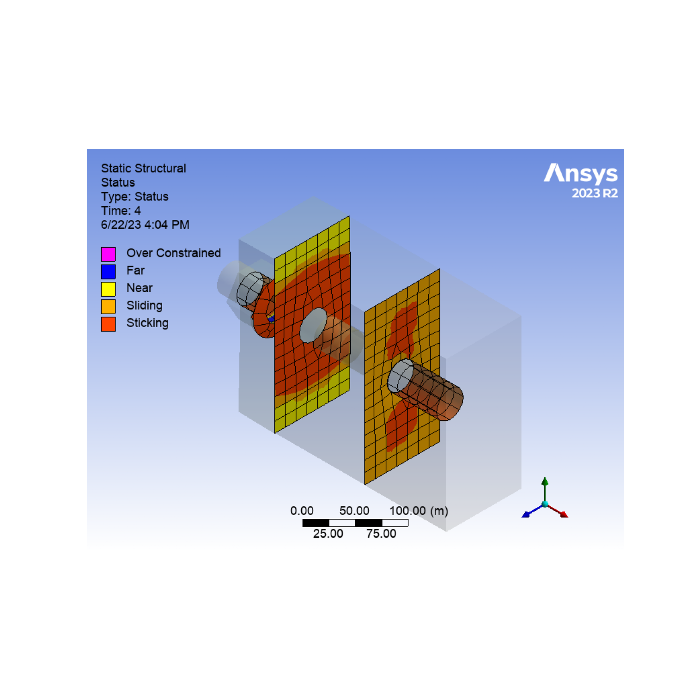

Note
Go to the end to download the full example code
Bolt Pretension Example Demonstration#
Using supplied files, this example shows how to insert a static structural analysis into a new Mechanical session and execute a sequence of Python scripting commands that define and solve the bolt-pretension analysis. Deformation, equivalent sresses, contact and bolt results are then post-processed.
Import necessary libraries#
import os
from ansys.mechanical.core import launch_mechanical
from ansys.mechanical.core.examples import download_file
from matplotlib import image as mpimg
from matplotlib import pyplot as plt
Launch Mechanical#
Launch a new Mechanical session in batch, setting cleanup_on_exit to
False. To close this Mechanical session when finished, this example
must call the mechanical.exit() method.
mechanical = launch_mechanical(batch=True, cleanup_on_exit=False)
print(mechanical)
Ansys Mechanical [Ansys Mechanical Enterprise]
Product Version:232
Software build date: 05/30/2023 05:40:47
Initialize variable for workflow#
Set the part_file_path variable on the server for later use.
Make this variable compatible for Windows, Linux, and Docker containers.
project_directory = mechanical.project_directory
print(f"project directory = {project_directory}")
project directory = /tmp/ANSYS.root.1/AnsysMechF280/Project_Mech_Files/
Download required geometry file#
Download the required file. Print the file path for the geometry file.
geometry_path = download_file(
"example_06_bolt_pret_geom.agdb", "pymechanical", "00_basic"
)
print(f"Downloaded the geometry file to: {geometry_path}")
# Upload the file to the project directory.
mechanical.upload(file_name=geometry_path, file_location_destination=project_directory)
# Build the path relative to project directory.
base_name = os.path.basename(geometry_path)
combined_path = os.path.join(project_directory, base_name)
part_file_path = combined_path.replace("\\", "\\\\")
mechanical.run_python_script(f"part_file_path='{part_file_path}'")
Downloaded the geometry file to: /home/runner/.local/share/ansys_mechanical_core/examples/example_06_bolt_pret_geom.agdb
Uploading example_06_bolt_pret_geom.agdb to 127.0.0.1:10000:/tmp/ANSYS.root.1/AnsysMechF280/Project_Mech_Files/.: 0%| | 0.00/2.52M [00:00<?, ?B/s]
Uploading example_06_bolt_pret_geom.agdb to 127.0.0.1:10000:/tmp/ANSYS.root.1/AnsysMechF280/Project_Mech_Files/.: 100%|##########| 2.52M/2.52M [00:00<00:00, 524MB/s]
''
Download required material file#
Download the required file. Print the file path for the material file.
mat_cop_path = download_file("example_06_Mat_Copper.xml", "pymechanical", "00_basic")
print(f"Downloaded the material file to: {mat_cop_path}")
# Upload the file to the project directory.
mechanical.upload(file_name=mat_cop_path, file_location_destination=project_directory)
# Build the path relative to project directory.
base_name = os.path.basename(mat_cop_path)
combined_path = os.path.join(project_directory, base_name)
mat_Copper_file_path = combined_path.replace("\\", "\\\\")
mechanical.run_python_script(f"mat_Copper_file_path='{mat_Copper_file_path}'")
Downloaded the material file to: /home/runner/.local/share/ansys_mechanical_core/examples/example_06_Mat_Copper.xml
Uploading example_06_Mat_Copper.xml to 127.0.0.1:10000:/tmp/ANSYS.root.1/AnsysMechF280/Project_Mech_Files/.: 0%| | 0.00/5.00k [00:00<?, ?B/s]
Uploading example_06_Mat_Copper.xml to 127.0.0.1:10000:/tmp/ANSYS.root.1/AnsysMechF280/Project_Mech_Files/.: 100%|##########| 5.00k/5.00k [00:00<00:00, 19.7MB/s]
''
Download required material files#
Download the required file. Print the file path for the material file.
mat_st_path = download_file("example_06_Mat_Steel.xml", "pymechanical", "00_basic")
print(f"Downloaded the material file to: {mat_st_path}")
# Upload the file to the project directory.
mechanical.upload(file_name=mat_st_path, file_location_destination=project_directory)
# Build the path relative to project directory.
base_name = os.path.basename(mat_st_path)
combined_path = os.path.join(project_directory, base_name)
mat_Steel_file_path = combined_path.replace("\\", "\\\\")
mechanical.run_python_script(f"mat_Steel_file_path='{mat_Steel_file_path}'")
# ----------------------- Verify the path-------------------
result = mechanical.run_python_script("part_file_path")
print(f"part_file_path on server: {result}")
Downloaded the material file to: /home/runner/.local/share/ansys_mechanical_core/examples/example_06_Mat_Steel.xml
Uploading example_06_Mat_Steel.xml to 127.0.0.1:10000:/tmp/ANSYS.root.1/AnsysMechF280/Project_Mech_Files/.: 0%| | 0.00/5.00k [00:00<?, ?B/s]
Uploading example_06_Mat_Steel.xml to 127.0.0.1:10000:/tmp/ANSYS.root.1/AnsysMechF280/Project_Mech_Files/.: 100%|##########| 5.00k/5.00k [00:00<00:00, 23.6MB/s]
part_file_path on server: /tmp/ANSYS.root.1/AnsysMechF280/Project_Mech_Files/example_06_bolt_pret_geom.agdb
Execute the script#
Run the Mechanical script to attach the geometry and set up and solve the analysis.
output = mechanical.run_python_script(
"""
import json
import os
# Section 1 Reads Geometry and Material info
geometry_import_group_11 = Model.GeometryImportGroup
geometry_import_12 = geometry_import_group_11.AddGeometryImport()
geometry_import_12_format = Ansys.Mechanical.DataModel.Enums.GeometryImportPreference.\
Format.Automatic
geometry_import_12_preferences = Ansys.ACT.Mechanical.Utilities.GeometryImportPreferences()
geometry_import_12_preferences.ProcessNamedSelections = True
geometry_import_12_preferences.ProcessCoordinateSystems = True
geometry_import_12.Import(part_file_path,geometry_import_12_format,geometry_import_12_preferences)
MAT = ExtAPI.DataModel.Project.Model.Materials
MAT.Import(mat_Copper_file_path)
MAT.Import(mat_Steel_file_path)
Model.AddStaticStructuralAnalysis()
STAT_STRUC = Model.Analyses[0]
STAT_STRUC_SOLN = STAT_STRUC.Solution
STAT_STRUC_ANA_SETTING = STAT_STRUC.Children[0]
# Section 2 Set up the Unit System.
ExtAPI.Application.ActiveUnitSystem = MechanicalUnitSystem.StandardNMM
# Section 3 Store all main tree nodes as variables.
MODEL = ExtAPI.DataModel.Project.Model
GEOM = ExtAPI.DataModel.Project.Model.Geometry
CONN_GRP = ExtAPI.DataModel.Project.Model.Connections
CS_GRP = ExtAPI.DataModel.Project.Model.CoordinateSystems
MSH = ExtAPI.DataModel.Project.Model.Mesh
NS_GRP = ExtAPI.DataModel.Project.Model.NamedSelections
# Section 4 Store Name Selection.
block3_block2_cont_NS = [x for x in ExtAPI.DataModel.Tree.AllObjects
if x.Name == 'block3_block2_cont'][0]
block3_block2_targ_NS = [x for x in ExtAPI.DataModel.Tree.AllObjects
if x.Name == 'block3_block2_targ'][0]
shank_block3_targ_NS = [x for x in ExtAPI.DataModel.Tree.AllObjects
if x.Name == 'shank_block3_targ'][0]
shank_block3_cont_NS = [x for x in ExtAPI.DataModel.Tree.AllObjects
if x.Name == 'shank_block3_cont'][0]
block1_washer_cont_NS = [x for x in ExtAPI.DataModel.Tree.AllObjects
if x.Name == 'block1_washer_cont'][0]
block1_washer_targ_NS = [x for x in ExtAPI.DataModel.Tree.AllObjects
if x.Name == 'block1_washer_targ'][0]
washer_bolt_cont_NS = [x for x in ExtAPI.DataModel.Tree.AllObjects
if x.Name == 'washer_bolt_cont'][0]
washer_bolt_targ_NS = [x for x in ExtAPI.DataModel.Tree.AllObjects
if x.Name == 'washer_bolt_targ'][0]
shank_bolt_targ_NS = [x for x in ExtAPI.DataModel.Tree.AllObjects
if x.Name == 'shank_bolt_targ'][0]
shank_bolt_cont_NS = [x for x in ExtAPI.DataModel.Tree.AllObjects
if x.Name == 'shank_bolt_cont'][0]
block2_block1_cont_NS = [x for x in ExtAPI.DataModel.Tree.AllObjects
if x.Name == 'block2_block1_cont'][0]
block2_block1_targ_NS = [x for x in ExtAPI.DataModel.Tree.AllObjects
if x.Name == 'block2_block1_targ'][0]
all_bodies = [x for x in ExtAPI.DataModel.Tree.AllObjects
if x.Name == 'all_bodies'][0]
bodies_5 = [x for x in ExtAPI.DataModel.Tree.AllObjects
if x.Name == 'bodies_5'][0]
shank = [x for x in ExtAPI.DataModel.Tree.AllObjects
if x.Name == 'shank'][0]
shank_face = [x for x in ExtAPI.DataModel.Tree.AllObjects
if x.Name == 'shank_face'][0]
shank_face2 = [x for x in ExtAPI.DataModel.Tree.AllObjects
if x.Name == 'shank_face2'][0]
bottom_surface = [x for x in ExtAPI.DataModel.Tree.AllObjects
if x.Name == 'bottom_surface'][0]
block2_surface = [x for x in ExtAPI.DataModel.Tree.AllObjects
if x.Name == 'block2_surface'][0]
shank_surface = [x for x in ExtAPI.DataModel.Tree.AllObjects
if x.Name == 'shank_surface'][0]
# Section 5 Assign material to bodies.
SURFACE1=GEOM.Children[0].Children[0]
SURFACE1.Material="Steel"
SURFACE2=GEOM.Children[1].Children[0]
SURFACE2.Material="Copper"
SURFACE3=GEOM.Children[2].Children[0]
SURFACE3.Material="Copper"
SURFACE4=GEOM.Children[3].Children[0]
SURFACE4.Material="Steel"
SURFACE5=GEOM.Children[4].Children[0]
SURFACE5.Material="Steel"
SURFACE6=GEOM.Children[5].Children[0]
SURFACE6.Material="Steel"
#Section 6 Define Coordinate System
coordinate_systems_17 = Model.CoordinateSystems
coordinate_system_93 = coordinate_systems_17.AddCoordinateSystem()
coordinate_system_93.OriginDefineBy = CoordinateSystemAlignmentType.Fixed
coordinate_system_93.OriginX = Quantity(-195, "mm")
coordinate_system_93.OriginY = Quantity(100, "mm")
coordinate_system_93.OriginZ = Quantity(50, "mm")
coordinate_system_93.PrimaryAxis = CoordinateSystemAxisType.PositiveZAxis
# Section 7 Change Contact settings and add command snippet to use Archard Wear Model.
connections = ExtAPI.DataModel.Project.Model.Connections
# Delete existing contacts
for connection in connections.Children:
if connection.DataModelObjectCategory==DataModelObjectCategory.ConnectionGroup:
connection.Delete()
CONT_REG1 = CONN_GRP.AddContactRegion()
CONT_REG1.SourceLocation = NS_GRP.Children[0]
CONT_REG1.TargetLocation = NS_GRP.Children[1]
CONT_REG1.ContactType=ContactType.Frictional
CONT_REG1.FrictionCoefficient = 0.2
CONT_REG1.SmallSliding = ContactSmallSlidingType.Off
CONT_REG1.UpdateStiffness = UpdateContactStiffness.Never
CMD1=CONT_REG1.AddCommandSnippet()
# Add missing contact keyopt and Archard Wear Model in workbench using command snippet.
AWM = '''keyopt,cid,9,5
rmodif,cid,10,0.00
rmodif,cid,23,0.001'''
CMD1.AppendText(AWM)
CONTS = CONN_GRP.Children[0]
CONT_REG2 = CONTS.AddContactRegion()
CONT_REG2.SourceLocation = NS_GRP.Children[3]
CONT_REG2.TargetLocation = NS_GRP.Children[2]
CONT_REG2.ContactType=ContactType.Bonded
CONT_REG2.ContactFormulation = ContactFormulation.MPC
CONT_REG3 = CONTS.AddContactRegion()
CONT_REG3.SourceLocation = NS_GRP.Children[4]
CONT_REG3.TargetLocation = NS_GRP.Children[5]
CONT_REG3.ContactType=ContactType.Frictional
CONT_REG3.FrictionCoefficient = 0.2
CONT_REG3.SmallSliding = ContactSmallSlidingType.Off
CONT_REG3.UpdateStiffness = UpdateContactStiffness.Never
CMD3=CONT_REG3.AddCommandSnippet()
# Add missing contact keyopt and Archard Wear Model in workbench using command snippet.
AWM3 = '''keyopt,cid,9,5
rmodif,cid,10,0.00
rmodif,cid,23,0.001'''
CMD3.AppendText(AWM3)
CONT_REG4 = CONTS.AddContactRegion()
CONT_REG4.SourceLocation = NS_GRP.Children[6]
CONT_REG4.TargetLocation = NS_GRP.Children[7]
CONT_REG4.ContactType=ContactType.Bonded
CONT_REG4.ContactFormulation = ContactFormulation.MPC
CONT_REG5 = CONTS.AddContactRegion()
CONT_REG5.SourceLocation = NS_GRP.Children[9]
CONT_REG5.TargetLocation = NS_GRP.Children[8]
CONT_REG5.ContactType=ContactType.Bonded
CONT_REG5.ContactFormulation = ContactFormulation.MPC
CONT_REG6 = CONTS.AddContactRegion()
CONT_REG6.SourceLocation = NS_GRP.Children[10]
CONT_REG6.TargetLocation = NS_GRP.Children[11]
CONT_REG6.ContactType=ContactType.Frictional
CONT_REG6.FrictionCoefficient = 0.2
CONT_REG6.SmallSliding = ContactSmallSlidingType.Off
CONT_REG6.UpdateStiffness = UpdateContactStiffness.Never
CMD6=CONT_REG6.AddCommandSnippet()
# Add missing contact keyopt and Archard Wear Model in workbench using command snippet.
AWM6 = '''keyopt,cid,9,5
rmodif,cid,10,0.00
rmodif,cid,23,0.001'''
CMD6.AppendText(AWM6)
# Add Contact Tool
#CONT_TOOL = CONN_GRP.AddContactTool()
#CONT_TOOL.AddPenetration()
#CONT_TOOL.AddStatus()
#CONT_TOOL.GenerateInitialContactResults()
# Section 8 Generate Mesh.
Hex_Method = MSH.AddAutomaticMethod()
Hex_Method.Location = all_bodies
Hex_Method.Method = MethodType.HexDominant
BODY_SIZING1=MSH.AddSizing()
BODY_SIZING1.Location=bodies_5
BODY_SIZING1.ElementSize = Quantity(15, "mm")
BODY_SIZING2=MSH.AddSizing()
BODY_SIZING2.Location=shank
BODY_SIZING2.ElementSize = Quantity(7, "mm")
Face_Meshing = MSH.AddFaceMeshing()
Face_Meshing.Location = shank_face
Face_Meshing.MappedMesh = False
Sweep_Method = MSH.AddAutomaticMethod()
Sweep_Method.Location = shank
Sweep_Method.Method = MethodType.Sweep
Sweep_Method.SourceTargetSelection = 2
Sweep_Method.SourceLocation = shank_face
Sweep_Method.TargetLocation = shank_face2
MSH.GenerateMesh()
# Section 9 Setup Analysis Settings.
STAT_STRUC_ANA_SETTING.NumberOfSteps = 4
step_index_list = [1]
with Transaction():
for step_index in step_index_list:
STAT_STRUC_ANA_SETTING.SetAutomaticTimeStepping(step_index, AutomaticTimeStepping.Off)
STAT_STRUC_ANA_SETTING.Activate()
step_index_list = [1]
with Transaction():
for step_index in step_index_list:
STAT_STRUC_ANA_SETTING.SetNumberOfSubSteps(step_index, 2)
STAT_STRUC_ANA_SETTING.Activate()
STAT_STRUC_ANA_SETTING.SolverType = SolverType.Direct
STAT_STRUC_ANA_SETTING.SolverPivotChecking = SolverPivotChecking.Off
# Section 10 Insert Loading and BC
FIX_SUP=STAT_STRUC.AddFixedSupport()
FIX_SUP.Location=block2_surface
Tabular_Force = STAT_STRUC.AddForce()
Tabular_Force.Location = bottom_surface
Tabular_Force.DefineBy = LoadDefineBy.Components
Tabular_Force.XComponent.Inputs[0].DiscreteValues = [Quantity('0[s]'),Quantity('1[s]'), \
Quantity('2[s]'),Quantity('3[s]'),Quantity('4[s]')]
Tabular_Force.XComponent.Output.DiscreteValues = [Quantity('0[N]'),Quantity('0[N]'), \
Quantity('5.e+005[N]'),Quantity('0[N]'),Quantity('-5.e+005[N]')]
Bolt_Pretension = STAT_STRUC.AddBoltPretension()
Bolt_Pretension.Location = shank_surface
Bolt_Pretension.Preload.Inputs[0].DiscreteValues = [Quantity('1[s]'),Quantity('2[s]'), \
Quantity('3[s]'),Quantity('4[s]')]
Bolt_Pretension.Preload.Output.DiscreteValues = [Quantity('6.1363e+005[N]'), \
Quantity('0 [N]'),Quantity('0 [N]'),Quantity('0[N]')]
Bolt_Pretension.SetDefineBy(2,BoltLoadDefineBy.Lock)
Bolt_Pretension.SetDefineBy(3,BoltLoadDefineBy.Lock)
Bolt_Pretension.SetDefineBy(4,BoltLoadDefineBy.Lock)
# Section 11 Insert Results.
Post_Contact_Tool = STAT_STRUC_SOLN.AddContactTool()
Post_Contact_Tool.ScopingMethod = GeometryDefineByType.Worksheet
Bolt_Tool = STAT_STRUC_SOLN.AddBoltTool()
Bolt_Working_Load = Bolt_Tool.AddWorkingLoad()
Total_Deformation = STAT_STRUC_SOLN.AddTotalDeformation()
Equivalent_stress_1 = STAT_STRUC_SOLN.AddEquivalentStress()
Equivalent_stress_2 = STAT_STRUC_SOLN.AddEquivalentStress()
Equivalent_stress_2.Location = shank
Force_Reaction_1 = STAT_STRUC_SOLN.AddForceReaction()
Force_Reaction_1.BoundaryConditionSelection = FIX_SUP
Moment_Reaction_2 = STAT_STRUC_SOLN.AddMomentReaction()
Moment_Reaction_2.BoundaryConditionSelection = FIX_SUP
# Section 12 Set Number of Processors to 6 using DANSYS
# Num_Cores = STAT_STRUC.SolveConfiguration.SolveProcessSettings.MaxNumberOfCores
# STAT_STRUC.SolveConfiguration.SolveProcessSettings.MaxNumberOfCores = 6
# Section 13 Solve and Validate the Results.
STAT_STRUC_SOLN.Solve(True)
STAT_STRUC_SS=STAT_STRUC_SOLN.Status
# Set isometric view and zoom to fit
cam = Graphics.Camera
cam.SetSpecificViewOrientation(ViewOrientationType.Iso)
cam.SetFit()
mechdir = STAT_STRUC.Children[0].SolverFilesDirectory
export_path = os.path.join(mechdir, "contact_status.png")
Post_Contact_Tool.Children[0].Activate()
Graphics.ExportImage(export_path, GraphicsImageExportFormat.PNG)
my_results_details = {
"Total_Deformation": str(Total_Deformation.Maximum),
"Equivalent_Stress1": str(Equivalent_stress_1.Maximum),
"Equivalent_Stress2": str(Equivalent_stress_2.Maximum),
}
json.dumps(my_results_details)
"""
)
print(output)
{"Equivalent_Stress1": "2322.9983727598928 [MPa]", "Total_Deformation": "0.39048356922848043 [mm]", "Equivalent_Stress2": "2322.9983727598928 [MPa]"}
Initialize the variable needed for the image directory#
Set the image_dir for later use.
Make the variable compatible for Windows, Linux, and Docker containers.
# image_directory_modified = project_directory.replace("\\", "\\\\")
mechanical.run_python_script(f"image_dir=ExtAPI.DataModel.AnalysisList[0].WorkingDir")
# Verify the path for image directory.
result_image_dir_server = mechanical.run_python_script(f"image_dir")
print(f"Images are stored on the server at: {result_image_dir_server}")
Images are stored on the server at: /tmp/ANSYS.root.1/AnsysMechF280/Project_Mech_Files/StaticStructural/
Download the image and plot#
Download one image file from the server to the current working directory and plot using matplotlib.
def get_image_path(image_name):
return os.path.join(result_image_dir_server, image_name)
def display_image(path):
print(f"Printing {path} using matplotlib")
image1 = mpimg.imread(path)
plt.figure(figsize=(15, 15))
plt.axis("off")
plt.imshow(image1)
plt.show()
image_name = "contact_status.png"
image_path_server = get_image_path(image_name)
if image_path_server != "":
current_working_directory = os.getcwd()
local_file_path_list = mechanical.download(
image_path_server, target_dir=current_working_directory
)
image_local_path = local_file_path_list[0]
print(f"Local image path : {image_local_path}")
display_image(image_local_path)

Downloading 127.0.0.1:10000:/tmp/ANSYS.root.1/AnsysMechF280/Project_Mech_Files/StaticStructural/contact_status.png to /home/runner/work/pymechanical-examples/pymechanical-examples/examples/basic/contact_status.png: 0%| | 0.00/79.5k [00:00<?, ?B/s]
Downloading 127.0.0.1:10000:/tmp/ANSYS.root.1/AnsysMechF280/Project_Mech_Files/StaticStructural/contact_status.png to /home/runner/work/pymechanical-examples/pymechanical-examples/examples/basic/contact_status.png: 100%|##########| 79.5k/79.5k [00:00<00:00, 418MB/s]
Local image path : /home/runner/work/pymechanical-examples/pymechanical-examples/examples/basic/contact_status.png
Printing /home/runner/work/pymechanical-examples/pymechanical-examples/examples/basic/contact_status.png using matplotlib
Download output file from solve and print contents#
Download the solve.out file from the server to the current working
directory and print the contents. Remove the solve.out file.
def get_solve_out_path(mechanical):
"""Get the solve out path and return."""
solve_out_path = ""
for file_path in mechanical.list_files():
if file_path.find("solve.out") != -1:
solve_out_path = file_path
break
return solve_out_path
def write_file_contents_to_console(path):
"""Write file contents to console."""
with open(path, "rt") as file:
for line in file:
print(line, end="")
solve_out_path = get_solve_out_path(mechanical)
if solve_out_path != "":
current_working_directory = os.getcwd()
mechanical.download(solve_out_path, target_dir=current_working_directory)
solve_out_local_path = os.path.join(current_working_directory, "solve.out")
write_file_contents_to_console(solve_out_local_path)
os.remove(solve_out_local_path)
Downloading 127.0.0.1:10000:/tmp/ANSYS.root.1/AnsysMechF280/Project_Mech_Files/StaticStructural/solve.out to /home/runner/work/pymechanical-examples/pymechanical-examples/examples/basic/solve.out: 0%| | 0.00/81.6k [00:00<?, ?B/s]
Downloading 127.0.0.1:10000:/tmp/ANSYS.root.1/AnsysMechF280/Project_Mech_Files/StaticStructural/solve.out to /home/runner/work/pymechanical-examples/pymechanical-examples/examples/basic/solve.out: 100%|##########| 81.6k/81.6k [00:00<00:00, 1.69GB/s]
Ansys Mechanical Enterprise
*------------------------------------------------------------------*
| |
| W E L C O M E T O T H E A N S Y S (R) P R O G R A M |
| |
*------------------------------------------------------------------*
***************************************************************
* ANSYS MAPDL 2023 R2 LEGAL NOTICES *
***************************************************************
* *
* Copyright 1971-2023 Ansys, Inc. All rights reserved. *
* Unauthorized use, distribution or duplication is *
* prohibited. *
* *
* Ansys is a registered trademark of Ansys, Inc. or its *
* subsidiaries in the United States or other countries. *
* See the Ansys, Inc. online documentation or the Ansys, Inc. *
* documentation CD or online help for the complete Legal *
* Notice. *
* *
***************************************************************
* *
* THIS ANSYS SOFTWARE PRODUCT AND PROGRAM DOCUMENTATION *
* INCLUDE TRADE SECRETS AND CONFIDENTIAL AND PROPRIETARY *
* PRODUCTS OF ANSYS, INC., ITS SUBSIDIARIES, OR LICENSORS. *
* The software products and documentation are furnished by *
* Ansys, Inc. or its subsidiaries under a software license *
* agreement that contains provisions concerning *
* non-disclosure, copying, length and nature of use, *
* compliance with exporting laws, warranties, disclaimers, *
* limitations of liability, and remedies, and other *
* provisions. The software products and documentation may be *
* used, disclosed, transferred, or copied only in accordance *
* with the terms and conditions of that software license *
* agreement. *
* *
* Ansys, Inc. is a UL registered *
* ISO 9001:2015 company. *
* *
***************************************************************
* *
* This product is subject to U.S. laws governing export and *
* re-export. *
* *
* For U.S. Government users, except as specifically granted *
* by the Ansys, Inc. software license agreement, the use, *
* duplication, or disclosure by the United States Government *
* is subject to restrictions stated in the Ansys, Inc. *
* software license agreement and FAR 12.212 (for non-DOD *
* licenses). *
* *
***************************************************************
*------------------------------------------------------------------*
| Ansys Product Improvement |
| |
| Ansys Product Improvement Program helps improve Ansys |
| products. Participating in this program is like filling out a |
| survey. Without interrupting your work, the software reports |
| anonymous usage information such as errors, machine and |
| solver statistics, features used, etc. to Ansys. We never |
| use the data to identify or contact you. |
| The data does NOT contain: |
| - Any personally identifiable information including names, |
| IP addresses, file names, part names, etc. |
| - Any information about your geometry or design specific |
| inputs. |
| You can stop participation at any time. To change your |
| selection go to Help >> Ansys Product Improvement Program |
| in the GUI. |
| For more information about the Ansys Privacy Policy, please |
| check: http://www.ansys.com/privacy |
| |
*------------------------------------------------------------------*
2023 R2
Point Releases and Patches installed:
Ansys, Inc. Products 2023 R2
Mechanical Products 2023 R2
***** MAPDL COMMAND LINE ARGUMENTS *****
BATCH MODE REQUESTED (-b) = NOLIST
INPUT FILE COPY MODE (-c) = COPY
DISTRIBUTED MEMORY PARALLEL REQUESTED
4 PARALLEL PROCESSES REQUESTED WITH SINGLE THREAD PER PROCESS
TOTAL OF 4 CORES REQUESTED
INPUT FILE NAME = /tmp/ANSYS.root.1/AnsysMechF280/Project_Mech_Files/StaticStructural/dummy.dat
OUTPUT FILE NAME = /tmp/ANSYS.root.1/AnsysMechF280/Project_Mech_Files/StaticStructural/solve.out
START-UP FILE MODE = NOREAD
STOP FILE MODE = NOREAD
RELEASE= 2023 R2 BUILD= 23.2 UP20230530 VERSION=LINUX x64
CURRENT JOBNAME=file0 16:04:02 JUN 22, 2023 CP= 0.222
PARAMETER _DS_PROGRESS = 999.0000000
/INPUT FILE= ds.dat LINE= 0
*** NOTE *** CP = 0.276 TIME= 16:04:02
The /CONFIG,NOELDB command is not valid in a distributed memory
parallel solution. Command is ignored.
*GET _WALLSTRT FROM ACTI ITEM=TIME WALL VALUE= 16.0672222
TITLE=
--Static Structural
SET PARAMETER DIMENSIONS ON _WB_PROJECTSCRATCH_DIR
TYPE=STRI DIMENSIONS= 248 1 1
PARAMETER _WB_PROJECTSCRATCH_DIR(1) = /tmp/ANSYS.root.1/AnsysMechF280/Project_Mech_Files/StaticStructural/
SET PARAMETER DIMENSIONS ON _WB_SOLVERFILES_DIR
TYPE=STRI DIMENSIONS= 248 1 1
PARAMETER _WB_SOLVERFILES_DIR(1) = /tmp/ANSYS.root.1/AnsysMechF280/Project_Mech_Files/StaticStructural/
SET PARAMETER DIMENSIONS ON _WB_USERFILES_DIR
TYPE=STRI DIMENSIONS= 248 1 1
PARAMETER _WB_USERFILES_DIR(1) = /tmp/Auser_files/
--- Data in consistent NMM units. See Solving Units in the help system for more
MPA UNITS SPECIFIED FOR INTERNAL
LENGTH = MILLIMETERS (mm)
MASS = TONNE (Mg)
TIME = SECONDS (sec)
TEMPERATURE = CELSIUS (C)
TOFFSET = 273.0
FORCE = NEWTON (N)
HEAT = MILLIJOULES (mJ)
INPUT UNITS ARE ALSO SET TO MPA
*** MAPDL - ENGINEERING ANALYSIS SYSTEM RELEASE 2023 R2 23.2 ***
Ansys Mechanical Enterprise
00000000 VERSION=LINUX x64 16:04:02 JUN 22, 2023 CP= 0.280
--Static Structural
***** MAPDL ANALYSIS DEFINITION (PREP7) *****
*********** Nodes for the whole assembly ***********
*********** Nodes for all Remote Points ***********
*********** Elements for Body 1 "Solid" ***********
*********** Elements for Body 3 "Solid" ***********
*********** Elements for Body 5 "Solid" ***********
*********** Elements for Body 7 "Solid" ***********
*********** Elements for Body 9 "Solid" ***********
*********** Elements for Body 11 "Solid" ***********
*********** Send User Defined Coordinate System(s) ***********
*********** Set Reference Temperature ***********
*********** Send Materials ***********
*********** Create Contact "Contact Region" ***********
Real Constant Set For Above Contact Is 13 & 12
*********** Create Contact "Contact Region 2" ***********
Real Constant Set For Above Contact Is 15 & 14
*********** Create Contact "Contact Region 3" ***********
Real Constant Set For Above Contact Is 17 & 16
*********** Create Contact "Contact Region 4" ***********
Real Constant Set For Above Contact Is 19 & 18
*********** Create Contact "Contact Region 5" ***********
Real Constant Set For Above Contact Is 21 & 20
*********** Create Contact "Contact Region 6" ***********
Real Constant Set For Above Contact Is 23 & 22
*********** Send Named Selection as Node Component ***********
*********** Send Named Selection as Node Component ***********
*********** Send Named Selection as Node Component ***********
*********** Send Named Selection as Node Component ***********
*********** Send Named Selection as Node Component ***********
*********** Send Named Selection as Node Component ***********
*********** Send Named Selection as Node Component ***********
*********** Send Named Selection as Node Component ***********
*********** Send Named Selection as Node Component ***********
*********** Send Named Selection as Node Component ***********
*********** Send Named Selection as Node Component ***********
*********** Send Named Selection as Node Component ***********
*********** Send Named Selection as Element Component ***********
*********** Send Named Selection as Element Component ***********
*********** Send Named Selection as Element Component ***********
*********** Send Named Selection as Node Component ***********
*********** Send Named Selection as Node Component ***********
*********** Send Named Selection as Node Component ***********
*********** Send Named Selection as Node Component ***********
*********** Send Named Selection as Node Component ***********
*********** Fixed Supports ***********
*********** Define Force Using Surface Effect Elements ***********
*********** Create Bolt Pretension "Bolt Pretension" ***********
CREATE COMPONENT CMEBOLT FROM PRETENSION ELEMENTS
CREATE COMPONENT CMNBOLT FROM PRETENSION NODES
***** ROUTINE COMPLETED ***** CP = 0.837
--- Number of total nodes = 20297
--- Number of contact elements = 4624
--- Number of spring elements = 0
--- Number of bearing elements = 0
--- Number of solid elements = 4419
--- Number of condensed parts = 0
--- Number of total elements = 9173
*GET _WALLBSOL FROM ACTI ITEM=TIME WALL VALUE= 16.0675000
****************************************************************************
************************* SOLUTION ********************************
****************************************************************************
***** MAPDL SOLUTION ROUTINE *****
PERFORM A STATIC ANALYSIS
THIS WILL BE A NEW ANALYSIS
EQUATION PIVOT CHECKING LOGIC WILL BE DISABLED
PRINT EQUATION PIVOT INFO ONCE PER LOADSTEP
PARAMETER _THICKRATIO = 0.6670000000
USE SPARSE MATRIX DIRECT SOLVER
CONTACT INFORMATION PRINTOUT LEVEL 1
CHECK INITIAL OPEN/CLOSED STATUS OF SELECTED CONTACT ELEMENTS
AND LIST DETAILED CONTACT PAIR INFORMATION
SPLIT CONTACT SURFACES AT SOLVE PHASE
NUMBER OF SPLITTING TBD BY PROGRAM
DO NOT COMBINE ELEMENT MATRIX FILES (.emat) AFTER DISTRIBUTED PARALLEL SOLUTION
DO NOT COMBINE ELEMENT SAVE DATA FILES (.esav) AFTER DISTRIBUTED PARALLEL SOLUTION
NLDIAG: Nonlinear diagnostics CONT option is set to ON.
Writing frequency : each ITERATION.
DEFINE RESTART CONTROL FOR LOADSTEP LAST
AT FREQUENCY OF LAST AND NUMBER FOR OVERWRITE IS -1
DELETE RESTART FILES OF ENDSTEP
****************************************************
******************* SOLVE FOR LS 1 OF 4 ****************
SELECT FOR ITEM=TYPE COMPONENT=
IN RANGE 24 TO 24 STEP 1
98 ELEMENTS (OF 9173 DEFINED) SELECTED BY ESEL COMMAND.
SELECT ALL NODES HAVING ANY ELEMENT IN ELEMENT SET.
337 NODES (OF 20297 DEFINED) SELECTED FROM
98 SELECTED ELEMENTS BY NSLE COMMAND.
SPECIFIED SURFACE LOAD PRES FOR ALL SELECTED ELEMENTS LKEY = 1 KVAL = 1
SET ACCORDING TO TABLE PARAMETER = _LOADVARI153X
SPECIFIED SURFACE LOAD PRES FOR ALL SELECTED ELEMENTS LKEY = 2 KVAL = 1
VALUES = 0.0000 0.0000 0.0000 0.0000
SPECIFIED SURFACE LOAD PRES FOR ALL SELECTED ELEMENTS LKEY = 3 KVAL = 1
VALUES = 0.0000 0.0000 0.0000 0.0000
ALL SELECT FOR ITEM=NODE COMPONENT=
IN RANGE 1 TO 20297 STEP 1
20297 NODES (OF 20297 DEFINED) SELECTED BY NSEL COMMAND.
ALL SELECT FOR ITEM=ELEM COMPONENT=
IN RANGE 1 TO 11816 STEP 1
9173 ELEMENTS (OF 9173 DEFINED) SELECTED BY ESEL COMMAND.
PRINTOUT RESUMED BY /GOP
SPECIFIED NODAL LOAD FX FOR SELECTED NODES 20167 TO 20167 BY 1
REAL= 613630.000 IMAG= 0.00000000
DO NOT USE AUTOMATIC TIME STEPPING THIS LOAD STEP
USE 2 SUBSTEPS INITIALLY THIS LOAD STEP FOR ALL DEGREES OF FREEDOM
FOR AUTOMATIC TIME STEPPING:
USE 2 SUBSTEPS AS A MAXIMUM
USE 2 SUBSTEPS AS A MINIMUM
TIME= 1.0000
ERASE THE CURRENT DATABASE OUTPUT CONTROL TABLE.
WRITE ALL ITEMS TO THE DATABASE WITH A FREQUENCY OF NONE
FOR ALL APPLICABLE ENTITIES
WRITE NSOL ITEMS TO THE DATABASE WITH A FREQUENCY OF ALL
FOR ALL APPLICABLE ENTITIES
WRITE RSOL ITEMS TO THE DATABASE WITH A FREQUENCY OF ALL
FOR ALL APPLICABLE ENTITIES
WRITE EANG ITEMS TO THE DATABASE WITH A FREQUENCY OF ALL
FOR ALL APPLICABLE ENTITIES
WRITE ETMP ITEMS TO THE DATABASE WITH A FREQUENCY OF ALL
FOR ALL APPLICABLE ENTITIES
WRITE VENG ITEMS TO THE DATABASE WITH A FREQUENCY OF ALL
FOR ALL APPLICABLE ENTITIES
WRITE STRS ITEMS TO THE DATABASE WITH A FREQUENCY OF ALL
FOR ALL APPLICABLE ENTITIES
WRITE EPEL ITEMS TO THE DATABASE WITH A FREQUENCY OF ALL
FOR ALL APPLICABLE ENTITIES
WRITE EPPL ITEMS TO THE DATABASE WITH A FREQUENCY OF ALL
FOR ALL APPLICABLE ENTITIES
WRITE CONT ITEMS TO THE DATABASE WITH A FREQUENCY OF ALL
FOR ALL APPLICABLE ENTITIES
*GET ANSINTER_ FROM ACTI ITEM=INT VALUE= 0.00000000
*IF ANSINTER_ ( = 0.00000 ) NE
0 ( = 0.00000 ) THEN
*ENDIF
*** NOTE *** CP = 1.110 TIME= 16:04:03
The automatic domain decomposition logic has selected the MESH domain
decomposition method with 4 processes per solution.
***** MAPDL SOLVE COMMAND *****
*** WARNING *** CP = 1.114 TIME= 16:04:03
Element shape checking is currently inactive. Issue SHPP,ON or
SHPP,WARN to reactivate, if desired.
*** NOTE *** CP = 1.161 TIME= 16:04:03
The model data was checked and warning messages were found.
Please review output or errors file (
/tmp/ANSYS.root.1/AnsysMechF280/Project_Mech_Files/StaticStructural/fil
le0.err ) for these warning messages.
*** SELECTION OF ELEMENT TECHNOLOGIES FOR APPLICABLE ELEMENTS ***
--- GIVE SUGGESTIONS AND RESET THE KEY OPTIONS ---
ELEMENT TYPE 1 IS SOLID187. IT IS NOT ASSOCIATED WITH FULLY INCOMPRESSIBLE
HYPERELASTIC MATERIALS. NO SUGGESTION IS AVAILABLE AND NO RESETTING IS NEEDED.
ELEMENT TYPE 2 IS SOLID186. KEYOPT(2)=0 IS SUGGESTED AND HAS BEEN RESET.
KEYOPT(1-12)= 0 0 0 0 0 0 0 0 0 0 0 0
ELEMENT TYPE 3 IS SOLID187. IT IS NOT ASSOCIATED WITH FULLY INCOMPRESSIBLE
HYPERELASTIC MATERIALS. NO SUGGESTION IS AVAILABLE AND NO RESETTING IS NEEDED.
ELEMENT TYPE 4 IS SOLID186. KEYOPT(2)=0 IS SUGGESTED AND HAS BEEN RESET.
KEYOPT(1-12)= 0 0 0 0 0 0 0 0 0 0 0 0
ELEMENT TYPE 5 IS SOLID187. IT IS NOT ASSOCIATED WITH FULLY INCOMPRESSIBLE
HYPERELASTIC MATERIALS. NO SUGGESTION IS AVAILABLE AND NO RESETTING IS NEEDED.
ELEMENT TYPE 6 IS SOLID186. KEYOPT(2)=0 IS SUGGESTED AND HAS BEEN RESET.
KEYOPT(1-12)= 0 0 0 0 0 0 0 0 0 0 0 0
ELEMENT TYPE 7 IS SOLID187. IT IS NOT ASSOCIATED WITH FULLY INCOMPRESSIBLE
HYPERELASTIC MATERIALS. NO SUGGESTION IS AVAILABLE AND NO RESETTING IS NEEDED.
ELEMENT TYPE 8 IS SOLID186. KEYOPT(2)=0 IS SUGGESTED AND HAS BEEN RESET.
KEYOPT(1-12)= 0 0 0 0 0 0 0 0 0 0 0 0
ELEMENT TYPE 9 IS SOLID187. IT IS NOT ASSOCIATED WITH FULLY INCOMPRESSIBLE
HYPERELASTIC MATERIALS. NO SUGGESTION IS AVAILABLE AND NO RESETTING IS NEEDED.
ELEMENT TYPE 10 IS SOLID186. KEYOPT(2)=0 IS SUGGESTED AND HAS BEEN RESET.
KEYOPT(1-12)= 0 0 0 0 0 0 0 0 0 0 0 0
ELEMENT TYPE 11 IS SOLID186. KEYOPT(2)=0 IS SUGGESTED AND HAS BEEN RESET.
KEYOPT(1-12)= 0 0 0 0 0 0 0 0 0 0 0 0
*** MAPDL - ENGINEERING ANALYSIS SYSTEM RELEASE 2023 R2 23.2 ***
Ansys Mechanical Enterprise
00000000 VERSION=LINUX x64 16:04:03 JUN 22, 2023 CP= 1.189
--Static Structural
S O L U T I O N O P T I O N S
PROBLEM DIMENSIONALITY. . . . . . . . . . . . .3-D
DEGREES OF FREEDOM. . . . . . UX UY UZ
ANALYSIS TYPE . . . . . . . . . . . . . . . . .STATIC (STEADY-STATE)
OFFSET TEMPERATURE FROM ABSOLUTE ZERO . . . . . 273.15
EQUATION SOLVER OPTION. . . . . . . . . . . . .SPARSE
NEWTON-RAPHSON OPTION . . . . . . . . . . . . .PROGRAM CHOSEN
GLOBALLY ASSEMBLED MATRIX . . . . . . . . . . .SYMMETRIC
*** WARNING *** CP = 1.232 TIME= 16:04:03
Material number 24 (used by element 11589) should normally have at
least one MP or one TB type command associated with it. Output of
energy by material may not be available.
*** NOTE *** CP = 1.250 TIME= 16:04:03
The step data was checked and warning messages were found.
Please review output or errors file (
/tmp/ANSYS.root.1/AnsysMechF280/Project_Mech_Files/StaticStructural/fil
le0.err ) for these warning messages.
*** NOTE *** CP = 1.250 TIME= 16:04:03
This nonlinear analysis defaults to using the full Newton-Raphson
solution procedure. This can be modified using the NROPT command.
CHECK INITIAL OPEN/CLOSED STATUS OF SELECTED CONTACT ELEMENTS
AND LIST DETAILED CONTACT PAIR INFORMATION
*WARNING*: Some MPC/Lagrange based elements (e.g.7543) in real constant
set 15 overlap with other MPC/Lagrange based elements (e.g.9533) in
real constant set 21 which can cause overconstraint.
*** WARNING *** CP = 3.028 TIME= 16:04:04
Overconstraint may occur for Lagrange multiplier or MPC based contact
algorithm.
*** WARNING *** CP = 3.028 TIME= 16:04:04
Certain contact elements (for example 9524 & 9461) overlap with other.
1970 CONTACT ELEMENTS & 293 TARGET ELEMENTS ARE UNSELECTED FOR PREPARATION OF SPLITTING.
6 CONTACT PAIRS ARE UNSELECTED.
*** NOTE *** CP = 3.071 TIME= 16:04:04
The maximum number of contact elements in any single contact pair is
100, which is smaller than the optimal domain size of 444 elements for
the given number of CPU domains (4). Therefore, no contact pairs are
being split by the CNCH,DMP logic.
BECAUSE SPLIT WAS NOT DONE FOR CONNECT REGION(S), UNSELECTED ELEMENTS ARE REVERTED (SELECTED).
*WARNING*: Some MPC/Lagrange based elements (e.g.7543) in real constant
set 15 overlap with other MPC/Lagrange based elements (e.g.9533) in
real constant set 21 which can cause overconstraint.
*** NOTE *** CP = 4.796 TIME= 16:04:05
Symmetric Deformable- deformable contact pair identified by real
constant set 12 and contact element type 12 has been set up. The
companion pair has real constant set ID 13. Both pairs should have
the same behavior.
*WARNING*: The contact pairs have similar mesh patterns which can cause
overconstraint. MAPDL will deactivate the current pair and keep its
companion pair.
Contact algorithm: Augmented Lagrange method
Contact detection at: Gauss integration point
Contact stiffness factor FKN 1.0000
The resulting initial contact stiffness 0.18076E+06
Default penetration tolerance factor FTOLN 0.10000
The resulting penetration tolerance 1.3999
Max. initial friction coefficient MU 0.20000
Default tangent stiffness factor FKT 1.0000
*** WARNING *** CP = 4.796 TIME= 16:04:05
It is highly recommended to set KEYOPT(10)=0 (update contact stiffness
at each iteration) in order to achieve better convergence.
Use constant contact stiffness
Default Max. friction stress TAUMAX 0.10000E+21
Average contact surface length 14.016
Average contact pair depth 13.999
Average target surface length 13.943
Default pinball region factor PINB 1.0000
The resulting pinball region 13.999
Contact offset is included. Initial geometric penetration is excluded.
*** NOTE *** CP = 4.796 TIME= 16:04:05
Max. Initial penetration 0 was detected between contact element 7163
and target element 7363.
****************************************
*** NOTE *** CP = 4.796 TIME= 16:04:05
Symmetric Deformable- deformable contact pair identified by real
constant set 13 and contact element type 12 has been set up. The
companion pair has real constant set ID 12. Both pairs should have
the same behavior.
MAPDL will keep the current pair and deactivate its companion pair,
resulting in asymmetric contact.
Contact algorithm: Augmented Lagrange method
Contact detection at: Gauss integration point
Contact stiffness factor FKN 1.0000
The resulting initial contact stiffness 0.18076E+06
Default penetration tolerance factor FTOLN 0.10000
The resulting penetration tolerance 1.4384
Max. initial friction coefficient MU 0.20000
Default tangent stiffness factor FKT 1.0000
*WARNING*: It is highly recommended to set KEYOPT(10)=0 (update contact
stiffness at each iteration) in order to achieve better convergence.
Use constant contact stiffness
Default Max. friction stress TAUMAX 0.10000E+21
Average contact surface length 14.007
Average contact pair depth 14.384
Average target surface length 13.942
Default pinball region factor PINB 1.0000
The resulting pinball region 14.384
Contact offset is included. Initial geometric penetration is excluded.
*** NOTE *** CP = 4.796 TIME= 16:04:05
Max. Initial penetration 0 was detected between contact element 7263
and target element 7063.
****************************************
*** NOTE *** CP = 4.796 TIME= 16:04:05
Symmetric Deformable- deformable contact pair identified by real
constant set 14 and contact element type 14 has been set up. The
companion pair has real constant set ID 15. Both pairs should have
the same behavior.
MAPDL will keep the current pair and deactivate its companion pair,
resulting in asymmetric contact.
Auto surface constraint is built
Contact algorithm: MPC based approach
*** NOTE *** CP = 4.796 TIME= 16:04:05
Contact related postprocess items (ETABLE, pressure ...) are not
available.
Contact detection at: nodal point (normal to target surface)
MPC will be built internally to handle bonded contact.
Average contact surface length 13.532
Average contact pair depth 9.7779
Average target surface length 6.3865
Default pinball region factor PINB 0.25000
The resulting pinball region 2.4445
Default target edge extension factor TOLS 2.0000
Initial penetration/gap is excluded.
Bonded contact (always) is defined.
*** NOTE *** CP = 4.796 TIME= 16:04:05
Max. Initial penetration 1.29197356 was detected between contact
element 7505 and target element 8546.
You may move entire target surface by : x= -2.851930401E-15, y=
-0.465542205, z= 1.20518303,to reduce initial penetration.
*WARNING*: The geometric gap/penetration may be too large. Increase
pinball radius if it is a true geometric gap/penetration. Decrease
pinball if it is a false one.
****************************************
*** NOTE *** CP = 4.796 TIME= 16:04:05
Symmetric Deformable- deformable contact pair identified by real
constant set 15 and contact element type 14 has been set up. The
companion pair has real constant set ID 14. Both pairs should have
the same behavior.
MAPDL will deactivate the current pair and keep its companion pair,
resulting in asymmetric contact.
Auto surface constraint is built
Contact algorithm: MPC based approach
*** NOTE *** CP = 4.796 TIME= 16:04:05
Contact related postprocess items (ETABLE, pressure ...) are not
available.
Contact detection at: nodal point (normal to target surface)
MPC will be built internally to handle bonded contact.
Average contact surface length 6.4480
Average contact pair depth 5.1166
Average target surface length 13.390
Default pinball region factor PINB 0.25000
*WARNING*: The default pinball radius may be too small to capture
contacting zone under small sliding assumption. Redefine the pinball
radius if necessary.
The resulting pinball region 1.2792
Default target edge extension factor TOLS 2.0000
Initial penetration/gap is excluded.
Bonded contact (always) is defined.
*** NOTE *** CP = 4.796 TIME= 16:04:05
Max. Initial penetration 1.08986554 was detected between contact
element 7672 and target element 7465.
You may move entire target surface by : x= 2.320973471E-02, y=
0.476433913, z= -0.979938229,to reduce initial penetration.
*WARNING*: The geometric gap/penetration may be too large. Increase
pinball radius if it is a true geometric gap/penetration. Decrease
pinball if it is a false one.
****************************************
*** NOTE *** CP = 4.796 TIME= 16:04:05
Symmetric Deformable- deformable contact pair identified by real
constant set 16 and contact element type 16 has been set up. The
companion pair has real constant set ID 17. Both pairs should have
the same behavior.
MAPDL will deactivate the current pair and keep its companion pair,
resulting in asymmetric contact.
Contact algorithm: Augmented Lagrange method
Contact detection at: Gauss integration point
Contact stiffness factor FKN 1.0000
The resulting initial contact stiffness 0.21529E+06
Default penetration tolerance factor FTOLN 0.10000
The resulting penetration tolerance 1.2077
Max. initial friction coefficient MU 0.20000
Default tangent stiffness factor FKT 1.0000
*WARNING*: It is highly recommended to set KEYOPT(10)=0 (update contact
stiffness at each iteration) in order to achieve better convergence.
Use constant contact stiffness
Default Max. friction stress TAUMAX 0.10000E+21
Average contact surface length 14.017
Average contact pair depth 12.077
Average target surface length 14.123
Default pinball region factor PINB 1.0000
The resulting pinball region 12.077
Contact offset is included. Initial geometric penetration is excluded.
*** NOTE *** CP = 4.796 TIME= 16:04:05
Max. Initial penetration 0 was detected between contact element 9299
and target element 9420.
****************************************
*** NOTE *** CP = 4.796 TIME= 16:04:05
Symmetric Deformable- deformable contact pair identified by real
constant set 17 and contact element type 16 has been set up. The
companion pair has real constant set ID 16. Both pairs should have
the same behavior.
MAPDL will keep the current pair and deactivate its companion pair,
resulting in asymmetric contact.
Contact algorithm: Augmented Lagrange method
Contact detection at: Gauss integration point
Contact stiffness factor FKN 1.0000
The resulting initial contact stiffness 0.21529E+06
Default penetration tolerance factor FTOLN 0.10000
The resulting penetration tolerance 0.43721
Max. initial friction coefficient MU 0.20000
Default tangent stiffness factor FKT 1.0000
*WARNING*: It is highly recommended to set KEYOPT(10)=0 (update contact
stiffness at each iteration) in order to achieve better convergence.
Use constant contact stiffness
Default Max. friction stress TAUMAX 0.10000E+21
Average contact surface length 14.470
Average contact pair depth 4.3721
Average target surface length 13.943
Default pinball region factor PINB 1.0000
The resulting pinball region 4.3721
Contact offset is included. Initial geometric penetration is excluded.
*** NOTE *** CP = 4.796 TIME= 16:04:05
Max. Initial penetration 0 was detected between contact element 9399
and target element 9247.
****************************************
*** NOTE *** CP = 4.796 TIME= 16:04:05
Symmetric Deformable- deformable contact pair identified by real
constant set 18 and contact element type 18 has been set up. The
companion pair has real constant set ID 19. Both pairs should have
the same behavior.
MAPDL will deactivate the current pair and keep its companion pair,
resulting in asymmetric contact.
Auto surface constraint is built
Contact algorithm: MPC based approach
*** NOTE *** CP = 4.796 TIME= 16:04:05
Contact related postprocess items (ETABLE, pressure ...) are not
available.
Contact detection at: nodal point (normal to target surface)
MPC will be built internally to handle bonded contact.
Average contact surface length 14.350
Average contact pair depth 4.3860
Average target surface length 12.238
Default pinball region factor PINB 0.25000
The resulting pinball region 1.0965
Default target edge extension factor TOLS 2.0000
Initial penetration/gap is excluded.
Bonded contact (always) is defined.
*** NOTE *** CP = 4.797 TIME= 16:04:05
Max. Initial penetration 1.136868377E-13 was detected between contact
element 9451 and target element 9480.
****************************************
*** NOTE *** CP = 4.797 TIME= 16:04:05
Symmetric Deformable- deformable contact pair identified by real
constant set 19 and contact element type 18 has been set up. The
companion pair has real constant set ID 18. Both pairs should have
the same behavior.
MAPDL will keep the current pair and deactivate its companion pair,
resulting in asymmetric contact.
Auto surface constraint is built
Contact algorithm: MPC based approach
*** NOTE *** CP = 4.797 TIME= 16:04:05
Contact related postprocess items (ETABLE, pressure ...) are not
available.
Contact detection at: nodal point (normal to target surface)
MPC will be built internally to handle bonded contact.
*WARNING*: Certain contact elements (for example 9469&9521) overlap
each other. Overconstraint may occur.
Average contact surface length 12.576
Average contact pair depth 12.172
Average target surface length 14.181
Default pinball region factor PINB 0.25000
The resulting pinball region 3.0431
Default target edge extension factor TOLS 2.0000
Initial penetration/gap is excluded.
Bonded contact (always) is defined.
*** NOTE *** CP = 4.797 TIME= 16:04:05
Max. Initial penetration 5.684341886E-14 was detected between contact
element 9456 and target element 9440.
****************************************
*** NOTE *** CP = 4.797 TIME= 16:04:05
Symmetric Deformable- deformable contact pair identified by real
constant set 20 and contact element type 20 has been set up. The
companion pair has real constant set ID 21. Both pairs should have
the same behavior.
MAPDL will keep the current pair and deactivate its companion pair,
resulting in asymmetric contact.
Auto surface constraint is built
Contact algorithm: MPC based approach
*** NOTE *** CP = 4.797 TIME= 16:04:05
Contact related postprocess items (ETABLE, pressure ...) are not
available.
Contact detection at: nodal point (normal to target surface)
MPC will be built internally to handle bonded contact.
*WARNING*: Certain contact elements (for example 9524&9461) overlap
each other. Overconstraint may occur.
Average contact surface length 13.095
Average contact pair depth 6.7384
Average target surface length 6.3865
Default pinball region factor PINB 0.25000
The resulting pinball region 1.6846
Default target edge extension factor TOLS 2.0000
Initial penetration/gap is excluded.
Bonded contact (always) is defined.
*** NOTE *** CP = 4.797 TIME= 16:04:05
Max. Initial penetration 1.29362615 was detected between contact
element 9514 and target element 10504.
You may move entire target surface by : x= -2.706933872E-15, y=
-0.495456236, z= 1.19498608,to reduce initial penetration.
*WARNING*: The geometric gap/penetration may be too large. Increase
pinball radius if it is a true geometric gap/penetration. Decrease
pinball if it is a false one.
****************************************
*** NOTE *** CP = 4.797 TIME= 16:04:05
Symmetric Deformable- deformable contact pair identified by real
constant set 21 and contact element type 20 has been set up. The
companion pair has real constant set ID 20. Both pairs should have
the same behavior.
MAPDL will deactivate the current pair and keep its companion pair,
resulting in asymmetric contact.
Auto surface constraint is built
Contact algorithm: MPC based approach
*** NOTE *** CP = 4.797 TIME= 16:04:05
Contact related postprocess items (ETABLE, pressure ...) are not
available.
Contact detection at: nodal point (normal to target surface)
MPC will be built internally to handle bonded contact.
Average contact surface length 6.4480
Average contact pair depth 5.1166
Average target surface length 12.888
Default pinball region factor PINB 0.25000
The resulting pinball region 1.2792
Default target edge extension factor TOLS 2.0000
Initial penetration/gap is excluded.
Bonded contact (always) is defined.
*** NOTE *** CP = 4.797 TIME= 16:04:05
Max. Initial penetration 1.24946925 was detected between contact
element 9676 and target element 9490.
You may move entire target surface by : x= 4.038012891E-02, y=
0.432153483, z= -1.1716596,to reduce initial penetration.
*WARNING*: The geometric gap/penetration may be too large. Increase
pinball radius if it is a true geometric gap/penetration. Decrease
pinball if it is a false one.
****************************************
*** NOTE *** CP = 4.797 TIME= 16:04:05
Symmetric Deformable- deformable contact pair identified by real
constant set 22 and contact element type 22 has been set up. The
companion pair has real constant set ID 23. Both pairs should have
the same behavior.
*WARNING*: The contact pairs have similar mesh patterns which can cause
overconstraint. MAPDL will deactivate the current pair and keep its
companion pair.
Contact algorithm: Augmented Lagrange method
Contact detection at: Gauss integration point
Contact stiffness factor FKN 1.0000
The resulting initial contact stiffness 0.17797E+06
Default penetration tolerance factor FTOLN 0.10000
The resulting penetration tolerance 1.4609
Max. initial friction coefficient MU 0.20000
Default tangent stiffness factor FKT 1.0000
*WARNING*: It is highly recommended to set KEYOPT(10)=0 (update contact
stiffness at each iteration) in order to achieve better convergence.
Use constant contact stiffness
Default Max. friction stress TAUMAX 0.10000E+21
Average contact surface length 14.016
Average contact pair depth 14.609
Average target surface length 13.943
Default pinball region factor PINB 1.0000
The resulting pinball region 14.609
Contact offset is included. Initial geometric penetration is excluded.
*** NOTE *** CP = 4.797 TIME= 16:04:05
Max. Initial penetration 0 was detected between contact element 11289
and target element 11495.
****************************************
*** NOTE *** CP = 4.797 TIME= 16:04:05
Symmetric Deformable- deformable contact pair identified by real
constant set 23 and contact element type 22 has been set up. The
companion pair has real constant set ID 22. Both pairs should have
the same behavior.
MAPDL will keep the current pair and deactivate its companion pair,
resulting in asymmetric contact.
Contact algorithm: Augmented Lagrange method
Contact detection at: Gauss integration point
Contact stiffness factor FKN 1.0000
The resulting initial contact stiffness 0.17797E+06
Default penetration tolerance factor FTOLN 0.10000
The resulting penetration tolerance 1.2225
Max. initial friction coefficient MU 0.20000
Default tangent stiffness factor FKT 1.0000
*WARNING*: It is highly recommended to set KEYOPT(10)=0 (update contact
stiffness at each iteration) in order to achieve better convergence.
Use constant contact stiffness
Default Max. friction stress TAUMAX 0.10000E+21
Average contact surface length 14.007
Average contact pair depth 12.225
Average target surface length 13.942
Default pinball region factor PINB 1.0000
The resulting pinball region 12.225
Contact offset is included. Initial geometric penetration is excluded.
*** NOTE *** CP = 4.797 TIME= 16:04:05
Max. Initial penetration 0 was detected between contact element 11389
and target element 11191.
****************************************
*** WARNING *** CP = 4.797 TIME= 16:04:05
Overconstraint may occur for Lagrange multiplier or MPC based contact
algorithm.
The reasons for possible overconstraint are:
*** WARNING *** CP = 4.797 TIME= 16:04:05
Certain contact elements (for example 9524 & 9461) overlap with other.
****************************************
D I S T R I B U T E D D O M A I N D E C O M P O S E R
...Number of elements: 9173
...Number of nodes: 20297
...Decompose to 4 CPU domains
...Element load balance ratio = 1.663
L O A D S T E P O P T I O N S
LOAD STEP NUMBER. . . . . . . . . . . . . . . . 1
TIME AT END OF THE LOAD STEP. . . . . . . . . . 1.0000
NUMBER OF SUBSTEPS. . . . . . . . . . . . . . . 2
MAXIMUM NUMBER OF EQUILIBRIUM ITERATIONS. . . . 15
STEP CHANGE BOUNDARY CONDITIONS . . . . . . . . NO
TERMINATE ANALYSIS IF NOT CONVERGED . . . . . .YES (EXIT)
CONVERGENCE CONTROLS. . . . . . . . . . . . . .USE DEFAULTS
PRINT OUTPUT CONTROLS . . . . . . . . . . . . .NO PRINTOUT
DATABASE OUTPUT CONTROLS
ITEM FREQUENCY COMPONENT
ALL NONE
NSOL ALL
RSOL ALL
EANG ALL
ETMP ALL
VENG ALL
STRS ALL
EPEL ALL
EPPL ALL
CONT ALL
SOLUTION MONITORING INFO IS WRITTEN TO FILE= file.mntr
>>>> PRETENSION ELEMENT STATUS <<<<
SECTION NAME PT.NODE --------STATUS-------------------- ----LOAD SOURCE----
25 20167 APPLIED PRELOAD FORCE= 0.61363E+06 F COMMAND
MAXIMUM NUMBER OF EQUILIBRIUM ITERATIONS HAS BEEN MODIFIED
TO BE, NEQIT = 26, BY SOLUTION CONTROL LOGIC.
Range of element maximum matrix coefficients in global coordinates
Maximum = 82891314.2 at element 836.
Minimum = 723227.988 at element 2095.
*** ELEMENT MATRIX FORMULATION TIMES
TYPE NUMBER ENAME TOTAL CP AVE CP
1 76 SOLID187 0.004 0.000051
2 920 SOLID186 0.096 0.000104
3 99 SOLID187 0.005 0.000050
4 980 SOLID186 0.100 0.000102
5 30 SOLID187 0.002 0.000056
6 486 SOLID186 0.051 0.000105
7 13 SOLID187 0.001 0.000053
8 51 SOLID186 0.005 0.000101
9 4 SOLID187 0.000 0.000054
10 58 SOLID186 0.007 0.000121
11 1702 SOLID186 0.179 0.000105
12 200 CONTA174 0.037 0.000186
13 200 TARGE170 0.000 0.000001
14 868 CONTA174 0.033 0.000038
15 868 TARGE170 0.001 0.000002
16 114 CONTA174 0.005 0.000047
17 114 TARGE170 0.000 0.000001
18 29 CONTA174 0.005 0.000165
19 29 TARGE170 0.000 0.000001
20 852 CONTA174 0.024 0.000028
21 852 TARGE170 0.001 0.000002
22 200 CONTA174 0.037 0.000185
23 200 TARGE170 0.000 0.000001
24 98 SURF154 0.003 0.000031
25 130 PRETS179 0.001 0.000005
Time at end of element matrix formulation CP = 7.0197649.
ALL CURRENT MAPDL DATA WRITTEN TO FILE NAME= file.rdb
FOR POSSIBLE RESUME FROM THIS POINT
FORCE CONVERGENCE VALUE = 0.3068E+06 CRITERION= 1534.
DISTRIBUTED SPARSE MATRIX DIRECT SOLVER.
Number of equations = 56398, Maximum wavefront = 861
Process memory allocated for solver = 135.698 MB
Process memory required for in-core solution = 130.392 MB
Process memory required for out-of-core solution = 65.109 MB
Total memory allocated for solver = 623.275 MB
Total memory required for in-core solution = 598.334 MB
Total memory required for out-of-core solution = 289.318 MB
*** NOTE *** CP = 7.485 TIME= 16:04:07
The Distributed Sparse Matrix Solver is currently running in the
in-core memory mode. This memory mode uses the most amount of memory
in order to avoid using the hard drive as much as possible, which most
often results in the fastest solution time. This mode is recommended
if enough physical memory is present to accommodate all of the solver
data.
curEqn= 10134 totEqn= 10134 Job CP sec= 7.959
Factor Done= 100% Factor Wall sec= 0.507 rate= 23.5 GFlops
Distributed sparse solver maximum pivot= 98739220.5 at node 1331 UX.
Distributed sparse solver minimum pivot= 215174.622 at node 12507 UZ.
Distributed sparse solver minimum pivot in absolute value= 215174.622
at node 12507 UZ.
DISP CONVERGENCE VALUE = 0.3440 CRITERION= 0.1720E-01
EQUIL ITER 1 COMPLETED. NEW TRIANG MATRIX. MAX DOF INC= 0.3440
DISP CONVERGENCE VALUE = 0.3440 CRITERION= 0.1720E-01
LINE SEARCH PARAMETER = 1.000 SCALED MAX DOF INC = 0.3440
FORCE CONVERGENCE VALUE = 0.2047E+05 CRITERION= 1543.
EQUIL ITER 2 COMPLETED. NEW TRIANG MATRIX. MAX DOF INC= 0.6055E-02
DISP CONVERGENCE VALUE = 0.6055E-02 CRITERION= 0.1740E-01 <<< CONVERGED
LINE SEARCH PARAMETER = 1.000 SCALED MAX DOF INC = 0.6055E-02
FORCE CONVERGENCE VALUE = 0.1448E+05 CRITERION= 1543.
EQUIL ITER 3 COMPLETED. NEW TRIANG MATRIX. MAX DOF INC= 0.3181E-02
DISP CONVERGENCE VALUE = 0.3181E-02 CRITERION= 0.1753E-01 <<< CONVERGED
LINE SEARCH PARAMETER = 1.000 SCALED MAX DOF INC = 0.3181E-02
FORCE CONVERGENCE VALUE = 6007. CRITERION= 1542.
EQUIL ITER 4 COMPLETED. NEW TRIANG MATRIX. MAX DOF INC= 0.1592E-02
DISP CONVERGENCE VALUE = 0.1592E-02 CRITERION= 0.1758E-01 <<< CONVERGED
LINE SEARCH PARAMETER = 1.000 SCALED MAX DOF INC = 0.1592E-02
FORCE CONVERGENCE VALUE = 3536. CRITERION= 1542.
EQUIL ITER 5 COMPLETED. NEW TRIANG MATRIX. MAX DOF INC= -0.1292E-02
DISP CONVERGENCE VALUE = 0.1292E-02 CRITERION= 0.1760E-01 <<< CONVERGED
LINE SEARCH PARAMETER = 1.000 SCALED MAX DOF INC = -0.1292E-02
FORCE CONVERGENCE VALUE = 3129. CRITERION= 1542.
EQUIL ITER 6 COMPLETED. NEW TRIANG MATRIX. MAX DOF INC= -0.3884E-03
DISP CONVERGENCE VALUE = 0.3884E-03 CRITERION= 0.1761E-01 <<< CONVERGED
LINE SEARCH PARAMETER = 1.000 SCALED MAX DOF INC = -0.3884E-03
FORCE CONVERGENCE VALUE = 699.7 CRITERION= 1542. <<< CONVERGED
>>> SOLUTION CONVERGED AFTER EQUILIBRIUM ITERATION 6
*** ELEMENT RESULT CALCULATION TIMES
TYPE NUMBER ENAME TOTAL CP AVE CP
1 76 SOLID187 0.003 0.000043
2 920 SOLID186 0.063 0.000069
3 99 SOLID187 0.004 0.000045
4 980 SOLID186 0.068 0.000069
5 30 SOLID187 0.001 0.000049
6 486 SOLID186 0.034 0.000070
7 13 SOLID187 0.001 0.000044
8 51 SOLID186 0.003 0.000067
9 4 SOLID187 0.000 0.000044
10 58 SOLID186 0.005 0.000081
11 1702 SOLID186 0.120 0.000071
12 200 CONTA174 0.009 0.000046
14 868 CONTA174 0.011 0.000013
16 114 CONTA174 0.003 0.000024
18 29 CONTA174 0.000 0.000013
20 852 CONTA174 0.010 0.000012
22 200 CONTA174 0.009 0.000044
24 98 SURF154 0.002 0.000019
*** NODAL LOAD CALCULATION TIMES
TYPE NUMBER ENAME TOTAL CP AVE CP
1 76 SOLID187 0.001 0.000013
2 920 SOLID186 0.012 0.000014
3 99 SOLID187 0.001 0.000013
4 980 SOLID186 0.013 0.000013
5 30 SOLID187 0.000 0.000014
6 486 SOLID186 0.007 0.000013
7 13 SOLID187 0.000 0.000013
8 51 SOLID186 0.001 0.000014
9 4 SOLID187 0.000 0.000013
10 58 SOLID186 0.001 0.000022
11 1702 SOLID186 0.023 0.000014
12 200 CONTA174 0.001 0.000007
14 868 CONTA174 0.002 0.000002
16 114 CONTA174 0.000 0.000003
18 29 CONTA174 0.000 0.000002
20 852 CONTA174 0.002 0.000002
22 200 CONTA174 0.001 0.000006
24 98 SURF154 0.000 0.000002
*** LOAD STEP 1 SUBSTEP 1 COMPLETED. CUM ITER = 6
*** TIME = 0.500000 TIME INC = 0.500000
FORCE CONVERGENCE VALUE = 6372. CRITERION= 3084.
DISP CONVERGENCE VALUE = 0.7548E-03 CRITERION= 0.1761E-01 <<< CONVERGED
EQUIL ITER 1 COMPLETED. NEW TRIANG MATRIX. MAX DOF INC= -0.7548E-03
DISP CONVERGENCE VALUE = 0.5361E-03 CRITERION= 0.1761E-01 <<< CONVERGED
LINE SEARCH PARAMETER = 0.7102 SCALED MAX DOF INC = -0.5361E-03
FORCE CONVERGENCE VALUE = 1686. CRITERION= 3084. <<< CONVERGED
>>> SOLUTION CONVERGED AFTER EQUILIBRIUM ITERATION 1
*** LOAD STEP 1 SUBSTEP 2 COMPLETED. CUM ITER = 7
*** TIME = 1.00000 TIME INC = 0.500000
*** MAPDL BINARY FILE STATISTICS
BUFFER SIZE USED= 16384
0.500 MB WRITTEN ON ELEMENT MATRIX FILE: file0.emat
7.375 MB WRITTEN ON ELEMENT SAVED DATA FILE: file0.esav
18.875 MB WRITTEN ON ASSEMBLED MATRIX FILE: file0.full
2.562 MB WRITTEN ON RESULTS FILE: file0.rst
*************** Write FE CONNECTORS *********
WRITE OUT CONSTRAINT EQUATIONS TO FILE= file.ce
****************************************************
*************** FINISHED SOLVE FOR LS 1 *************
****************************************************
******************* SOLVE FOR LS 2 OF 4 ****************
PRINTOUT RESUMED BY /GOP
DELETE ALL SPECIFIED NODAL LOADS FROM NODE 20167 TO 20167 BY 1
NUMBER OF NODAL LOADS DELETED= 1
*** WARNING *** CP = 16.479 TIME= 16:04:16
Table _FIX is an MAPDL reserved table name. It is used to constrain
structural degrees of freedom to their current displaced status. This
table should not be used for other purposes.
SPECIFIED CONSTRAINT UX FOR SELECTED NODES 20167 TO 20167 BY 1
SET ACCORDING TO TABLE PARAMETER = _FIX
USE AUTOMATIC TIME STEPPING THIS LOAD STEP
USE 1 SUBSTEPS INITIALLY THIS LOAD STEP FOR ALL DEGREES OF FREEDOM
FOR AUTOMATIC TIME STEPPING:
USE 10 SUBSTEPS AS A MAXIMUM
USE 1 SUBSTEPS AS A MINIMUM
TIME= 2.0000
ERASE THE CURRENT DATABASE OUTPUT CONTROL TABLE.
WRITE ALL ITEMS TO THE DATABASE WITH A FREQUENCY OF NONE
FOR ALL APPLICABLE ENTITIES
WRITE NSOL ITEMS TO THE DATABASE WITH A FREQUENCY OF ALL
FOR ALL APPLICABLE ENTITIES
WRITE RSOL ITEMS TO THE DATABASE WITH A FREQUENCY OF ALL
FOR ALL APPLICABLE ENTITIES
WRITE EANG ITEMS TO THE DATABASE WITH A FREQUENCY OF ALL
FOR ALL APPLICABLE ENTITIES
WRITE ETMP ITEMS TO THE DATABASE WITH A FREQUENCY OF ALL
FOR ALL APPLICABLE ENTITIES
WRITE VENG ITEMS TO THE DATABASE WITH A FREQUENCY OF ALL
FOR ALL APPLICABLE ENTITIES
WRITE STRS ITEMS TO THE DATABASE WITH A FREQUENCY OF ALL
FOR ALL APPLICABLE ENTITIES
WRITE EPEL ITEMS TO THE DATABASE WITH A FREQUENCY OF ALL
FOR ALL APPLICABLE ENTITIES
WRITE EPPL ITEMS TO THE DATABASE WITH A FREQUENCY OF ALL
FOR ALL APPLICABLE ENTITIES
WRITE CONT ITEMS TO THE DATABASE WITH A FREQUENCY OF ALL
FOR ALL APPLICABLE ENTITIES
***** MAPDL SOLVE COMMAND *****
*** WARNING *** CP = 16.611 TIME= 16:04:16
Material number 24 (used by element 11589) should normally have at
least one MP or one TB type command associated with it. Output of
energy by material may not be available.
*** NOTE *** CP = 16.616 TIME= 16:04:16
The step data was checked and warning messages were found.
Please review output or errors file (
/tmp/ANSYS.root.1/AnsysMechF280/Project_Mech_Files/StaticStructural/fil
le0.err ) for these warning messages.
*** NOTE *** CP = 16.616 TIME= 16:04:16
This nonlinear analysis defaults to using the full Newton-Raphson
solution procedure. This can be modified using the NROPT command.
*** MAPDL - ENGINEERING ANALYSIS SYSTEM RELEASE 2023 R2 23.2 ***
Ansys Mechanical Enterprise
00000000 VERSION=LINUX x64 16:04:16 JUN 22, 2023 CP= 16.733
--Static Structural
L O A D S T E P O P T I O N S
LOAD STEP NUMBER. . . . . . . . . . . . . . . . 2
TIME AT END OF THE LOAD STEP. . . . . . . . . . 2.0000
AUTOMATIC TIME STEPPING . . . . . . . . . . . . ON
INITIAL NUMBER OF SUBSTEPS . . . . . . . . . 1
MAXIMUM NUMBER OF SUBSTEPS . . . . . . . . . 10
MINIMUM NUMBER OF SUBSTEPS . . . . . . . . . 1
MAXIMUM NUMBER OF EQUILIBRIUM ITERATIONS. . . . 15
STEP CHANGE BOUNDARY CONDITIONS . . . . . . . . NO
TERMINATE ANALYSIS IF NOT CONVERGED . . . . . .YES (EXIT)
CONVERGENCE CONTROLS. . . . . . . . . . . . . .USE DEFAULTS
PRINT OUTPUT CONTROLS . . . . . . . . . . . . .NO PRINTOUT
DATABASE OUTPUT CONTROLS
ITEM FREQUENCY COMPONENT
ALL NONE
NSOL ALL
RSOL ALL
EANG ALL
ETMP ALL
VENG ALL
STRS ALL
EPEL ALL
EPPL ALL
CONT ALL
SOLUTION MONITORING INFO IS WRITTEN TO FILE= file.mntr
>>>> PRETENSION ELEMENT STATUS <<<<
SECTION NAME PT.NODE --------STATUS-------------------- ----LOAD SOURCE----
25 20167 FIXED RELATIVE MOTION= 0.70415 D COMMAND
MAXIMUM NUMBER OF EQUILIBRIUM ITERATIONS HAS BEEN MODIFIED
TO BE, NEQIT = 26, BY SOLUTION CONTROL LOGIC.
FORCE CONVERGENCE VALUE = 0.4900E+05 CRITERION= 3094.
DISP CONVERGENCE VALUE = 0.1808E-01 CRITERION= 0.1761E-01
EQUIL ITER 1 COMPLETED. NEW TRIANG MATRIX. MAX DOF INC= 0.1808E-01
DISP CONVERGENCE VALUE = 0.1799E-01 CRITERION= 0.1761E-01
LINE SEARCH PARAMETER = 0.9950 SCALED MAX DOF INC = 0.1799E-01
FORCE CONVERGENCE VALUE = 0.3030E+05 CRITERION= 3119.
EQUIL ITER 2 COMPLETED. NEW TRIANG MATRIX. MAX DOF INC= 0.7614E-02
DISP CONVERGENCE VALUE = 0.7466E-02 CRITERION= 0.1761E-01 <<< CONVERGED
LINE SEARCH PARAMETER = 0.9806 SCALED MAX DOF INC = 0.7466E-02
FORCE CONVERGENCE VALUE = 0.2519E+05 CRITERION= 3120.
EQUIL ITER 3 COMPLETED. NEW TRIANG MATRIX. MAX DOF INC= 0.1066E-01
DISP CONVERGENCE VALUE = 0.1066E-01 CRITERION= 0.1761E-01 <<< CONVERGED
LINE SEARCH PARAMETER = 1.000 SCALED MAX DOF INC = 0.1066E-01
FORCE CONVERGENCE VALUE = 0.2206E+05 CRITERION= 3128.
EQUIL ITER 4 COMPLETED. NEW TRIANG MATRIX. MAX DOF INC= 0.6111E-02
DISP CONVERGENCE VALUE = 0.6111E-02 CRITERION= 0.1761E-01 <<< CONVERGED
LINE SEARCH PARAMETER = 1.000 SCALED MAX DOF INC = 0.6111E-02
FORCE CONVERGENCE VALUE = 0.1484E+05 CRITERION= 3132.
EQUIL ITER 5 COMPLETED. NEW TRIANG MATRIX. MAX DOF INC= 0.4437E-02
DISP CONVERGENCE VALUE = 0.4437E-02 CRITERION= 0.1761E-01 <<< CONVERGED
LINE SEARCH PARAMETER = 1.000 SCALED MAX DOF INC = 0.4437E-02
FORCE CONVERGENCE VALUE = 8569. CRITERION= 3138.
EQUIL ITER 6 COMPLETED. NEW TRIANG MATRIX. MAX DOF INC= 0.2540E-02
DISP CONVERGENCE VALUE = 0.2540E-02 CRITERION= 0.1761E-01 <<< CONVERGED
LINE SEARCH PARAMETER = 1.000 SCALED MAX DOF INC = 0.2540E-02
FORCE CONVERGENCE VALUE = 6590. CRITERION= 3141.
EQUIL ITER 7 COMPLETED. NEW TRIANG MATRIX. MAX DOF INC= 0.1174E-02
DISP CONVERGENCE VALUE = 0.1174E-02 CRITERION= 0.1761E-01 <<< CONVERGED
LINE SEARCH PARAMETER = 1.000 SCALED MAX DOF INC = 0.1174E-02
FORCE CONVERGENCE VALUE = 4606. CRITERION= 3694.
EQUIL ITER 8 COMPLETED. NEW TRIANG MATRIX. MAX DOF INC= 0.1512E-02
DISP CONVERGENCE VALUE = 0.1512E-02 CRITERION= 0.1761E-01 <<< CONVERGED
LINE SEARCH PARAMETER = 1.000 SCALED MAX DOF INC = 0.1512E-02
FORCE CONVERGENCE VALUE = 1796. CRITERION= 3771. <<< CONVERGED
>>> SOLUTION CONVERGED AFTER EQUILIBRIUM ITERATION 8
*** LOAD STEP 2 SUBSTEP 1 COMPLETED. CUM ITER = 15
*** TIME = 2.00000 TIME INC = 1.00000
****************************************************
*************** FINISHED SOLVE FOR LS 2 *************
****************************************************
******************* SOLVE FOR LS 3 OF 4 ****************
PRINTOUT RESUMED BY /GOP
DELETE ALL SPECIFIED NODAL LOADS FROM NODE 20167 TO 20167 BY 1
NUMBER OF NODAL LOADS DELETED= 0
SPECIFIED CONSTRAINT UX FOR SELECTED NODES 20167 TO 20167 BY 1
SET ACCORDING TO TABLE PARAMETER = _FIX
USE AUTOMATIC TIME STEPPING THIS LOAD STEP
USE 1 SUBSTEPS INITIALLY THIS LOAD STEP FOR ALL DEGREES OF FREEDOM
FOR AUTOMATIC TIME STEPPING:
USE 10 SUBSTEPS AS A MAXIMUM
USE 1 SUBSTEPS AS A MINIMUM
TIME= 3.0000
ERASE THE CURRENT DATABASE OUTPUT CONTROL TABLE.
WRITE ALL ITEMS TO THE DATABASE WITH A FREQUENCY OF NONE
FOR ALL APPLICABLE ENTITIES
WRITE NSOL ITEMS TO THE DATABASE WITH A FREQUENCY OF ALL
FOR ALL APPLICABLE ENTITIES
WRITE RSOL ITEMS TO THE DATABASE WITH A FREQUENCY OF ALL
FOR ALL APPLICABLE ENTITIES
WRITE EANG ITEMS TO THE DATABASE WITH A FREQUENCY OF ALL
FOR ALL APPLICABLE ENTITIES
WRITE ETMP ITEMS TO THE DATABASE WITH A FREQUENCY OF ALL
FOR ALL APPLICABLE ENTITIES
WRITE VENG ITEMS TO THE DATABASE WITH A FREQUENCY OF ALL
FOR ALL APPLICABLE ENTITIES
WRITE STRS ITEMS TO THE DATABASE WITH A FREQUENCY OF ALL
FOR ALL APPLICABLE ENTITIES
WRITE EPEL ITEMS TO THE DATABASE WITH A FREQUENCY OF ALL
FOR ALL APPLICABLE ENTITIES
WRITE EPPL ITEMS TO THE DATABASE WITH A FREQUENCY OF ALL
FOR ALL APPLICABLE ENTITIES
WRITE CONT ITEMS TO THE DATABASE WITH A FREQUENCY OF ALL
FOR ALL APPLICABLE ENTITIES
***** MAPDL SOLVE COMMAND *****
*** WARNING *** CP = 27.335 TIME= 16:04:26
Material number 24 (used by element 11589) should normally have at
least one MP or one TB type command associated with it. Output of
energy by material may not be available.
*** NOTE *** CP = 27.343 TIME= 16:04:26
The step data was checked and warning messages were found.
Please review output or errors file (
/tmp/ANSYS.root.1/AnsysMechF280/Project_Mech_Files/StaticStructural/fil
le0.err ) for these warning messages.
*** NOTE *** CP = 27.344 TIME= 16:04:26
This nonlinear analysis defaults to using the full Newton-Raphson
solution procedure. This can be modified using the NROPT command.
*** MAPDL - ENGINEERING ANALYSIS SYSTEM RELEASE 2023 R2 23.2 ***
Ansys Mechanical Enterprise
00000000 VERSION=LINUX x64 16:04:26 JUN 22, 2023 CP= 27.474
--Static Structural
L O A D S T E P O P T I O N S
LOAD STEP NUMBER. . . . . . . . . . . . . . . . 3
TIME AT END OF THE LOAD STEP. . . . . . . . . . 3.0000
AUTOMATIC TIME STEPPING . . . . . . . . . . . . ON
INITIAL NUMBER OF SUBSTEPS . . . . . . . . . 1
MAXIMUM NUMBER OF SUBSTEPS . . . . . . . . . 10
MINIMUM NUMBER OF SUBSTEPS . . . . . . . . . 1
MAXIMUM NUMBER OF EQUILIBRIUM ITERATIONS. . . . 15
STEP CHANGE BOUNDARY CONDITIONS . . . . . . . . NO
TERMINATE ANALYSIS IF NOT CONVERGED . . . . . .YES (EXIT)
CONVERGENCE CONTROLS. . . . . . . . . . . . . .USE DEFAULTS
PRINT OUTPUT CONTROLS . . . . . . . . . . . . .NO PRINTOUT
DATABASE OUTPUT CONTROLS
ITEM FREQUENCY COMPONENT
ALL NONE
NSOL ALL
RSOL ALL
EANG ALL
ETMP ALL
VENG ALL
STRS ALL
EPEL ALL
EPPL ALL
CONT ALL
SOLUTION MONITORING INFO IS WRITTEN TO FILE= file.mntr
>>>> PRETENSION ELEMENT STATUS <<<<
SECTION NAME PT.NODE --------STATUS-------------------- ----LOAD SOURCE----
25 20167 FIXED RELATIVE MOTION= 0.70415 D COMMAND
MAXIMUM NUMBER OF EQUILIBRIUM ITERATIONS HAS BEEN MODIFIED
TO BE, NEQIT = 26, BY SOLUTION CONTROL LOGIC.
FORCE CONVERGENCE VALUE = 0.4900E+05 CRITERION= 3135.
DISP CONVERGENCE VALUE = 0.1396 CRITERION= 0.1761E-01
EQUIL ITER 1 COMPLETED. NEW TRIANG MATRIX. MAX DOF INC= -0.1396
DISP CONVERGENCE VALUE = 0.1197E-01 CRITERION= 0.1761E-01 <<< CONVERGED
LINE SEARCH PARAMETER = 0.8577E-01 SCALED MAX DOF INC = -0.1197E-01
FORCE CONVERGENCE VALUE = 0.4939E+06 CRITERION= 3151.
EQUIL ITER 2 COMPLETED. NEW TRIANG MATRIX. MAX DOF INC= -0.5008E-01
DISP CONVERGENCE VALUE = 0.1092E-01 CRITERION= 0.1761E-01 <<< CONVERGED
LINE SEARCH PARAMETER = 0.2181 SCALED MAX DOF INC = -0.1092E-01
FORCE CONVERGENCE VALUE = 0.4422E+06 CRITERION= 3131.
EQUIL ITER 3 COMPLETED. NEW TRIANG MATRIX. MAX DOF INC= -0.2372E-01
DISP CONVERGENCE VALUE = 0.6546E-02 CRITERION= 0.1761E-01 <<< CONVERGED
LINE SEARCH PARAMETER = 0.2760 SCALED MAX DOF INC = -0.6546E-02
FORCE CONVERGENCE VALUE = 0.3720E+06 CRITERION= 3113.
EQUIL ITER 4 COMPLETED. NEW TRIANG MATRIX. MAX DOF INC= -0.1084E-01
DISP CONVERGENCE VALUE = 0.5489E-02 CRITERION= 0.1761E-01 <<< CONVERGED
LINE SEARCH PARAMETER = 0.5065 SCALED MAX DOF INC = -0.5489E-02
FORCE CONVERGENCE VALUE = 0.2180E+06 CRITERION= 3094.
EQUIL ITER 5 COMPLETED. NEW TRIANG MATRIX. MAX DOF INC= -0.4149E-02
DISP CONVERGENCE VALUE = 0.3793E-02 CRITERION= 0.1761E-01 <<< CONVERGED
LINE SEARCH PARAMETER = 0.9142 SCALED MAX DOF INC = -0.3793E-02
FORCE CONVERGENCE VALUE = 0.4687E+05 CRITERION= 3082.
EQUIL ITER 6 COMPLETED. NEW TRIANG MATRIX. MAX DOF INC= -0.1696E-02
DISP CONVERGENCE VALUE = 0.1540E-02 CRITERION= 0.1761E-01 <<< CONVERGED
LINE SEARCH PARAMETER = 0.9083 SCALED MAX DOF INC = -0.1540E-02
FORCE CONVERGENCE VALUE = 7300. CRITERION= 3079.
EQUIL ITER 7 COMPLETED. NEW TRIANG MATRIX. MAX DOF INC= -0.1038E-02
DISP CONVERGENCE VALUE = 0.9327E-03 CRITERION= 0.1761E-01 <<< CONVERGED
LINE SEARCH PARAMETER = 0.8984 SCALED MAX DOF INC = -0.9327E-03
FORCE CONVERGENCE VALUE = 3628. CRITERION= 3618.
EQUIL ITER 8 COMPLETED. NEW TRIANG MATRIX. MAX DOF INC= 0.6074E-03
DISP CONVERGENCE VALUE = 0.4664E-03 CRITERION= 0.1761E-01 <<< CONVERGED
LINE SEARCH PARAMETER = 0.7679 SCALED MAX DOF INC = 0.4664E-03
FORCE CONVERGENCE VALUE = 1562. CRITERION= 3692. <<< CONVERGED
>>> SOLUTION CONVERGED AFTER EQUILIBRIUM ITERATION 8
*** LOAD STEP 3 SUBSTEP 1 COMPLETED. CUM ITER = 23
*** TIME = 3.00000 TIME INC = 1.00000
****************************************************
*************** FINISHED SOLVE FOR LS 3 *************
****************************************************
******************* SOLVE FOR LS 4 OF 4 ****************
PRINTOUT RESUMED BY /GOP
DELETE ALL SPECIFIED NODAL LOADS FROM NODE 20167 TO 20167 BY 1
NUMBER OF NODAL LOADS DELETED= 0
SPECIFIED CONSTRAINT UX FOR SELECTED NODES 20167 TO 20167 BY 1
SET ACCORDING TO TABLE PARAMETER = _FIX
USE AUTOMATIC TIME STEPPING THIS LOAD STEP
USE 1 SUBSTEPS INITIALLY THIS LOAD STEP FOR ALL DEGREES OF FREEDOM
FOR AUTOMATIC TIME STEPPING:
USE 10 SUBSTEPS AS A MAXIMUM
USE 1 SUBSTEPS AS A MINIMUM
TIME= 4.0000
ERASE THE CURRENT DATABASE OUTPUT CONTROL TABLE.
WRITE ALL ITEMS TO THE DATABASE WITH A FREQUENCY OF NONE
FOR ALL APPLICABLE ENTITIES
WRITE NSOL ITEMS TO THE DATABASE WITH A FREQUENCY OF ALL
FOR ALL APPLICABLE ENTITIES
WRITE RSOL ITEMS TO THE DATABASE WITH A FREQUENCY OF ALL
FOR ALL APPLICABLE ENTITIES
WRITE EANG ITEMS TO THE DATABASE WITH A FREQUENCY OF ALL
FOR ALL APPLICABLE ENTITIES
WRITE ETMP ITEMS TO THE DATABASE WITH A FREQUENCY OF ALL
FOR ALL APPLICABLE ENTITIES
WRITE VENG ITEMS TO THE DATABASE WITH A FREQUENCY OF ALL
FOR ALL APPLICABLE ENTITIES
WRITE STRS ITEMS TO THE DATABASE WITH A FREQUENCY OF ALL
FOR ALL APPLICABLE ENTITIES
WRITE EPEL ITEMS TO THE DATABASE WITH A FREQUENCY OF ALL
FOR ALL APPLICABLE ENTITIES
WRITE EPPL ITEMS TO THE DATABASE WITH A FREQUENCY OF ALL
FOR ALL APPLICABLE ENTITIES
WRITE CONT ITEMS TO THE DATABASE WITH A FREQUENCY OF ALL
FOR ALL APPLICABLE ENTITIES
***** MAPDL SOLVE COMMAND *****
*** WARNING *** CP = 39.298 TIME= 16:04:37
Material number 24 (used by element 11589) should normally have at
least one MP or one TB type command associated with it. Output of
energy by material may not be available.
*** NOTE *** CP = 39.304 TIME= 16:04:37
The step data was checked and warning messages were found.
Please review output or errors file (
/tmp/ANSYS.root.1/AnsysMechF280/Project_Mech_Files/StaticStructural/fil
le0.err ) for these warning messages.
*** NOTE *** CP = 39.304 TIME= 16:04:37
This nonlinear analysis defaults to using the full Newton-Raphson
solution procedure. This can be modified using the NROPT command.
*** MAPDL - ENGINEERING ANALYSIS SYSTEM RELEASE 2023 R2 23.2 ***
Ansys Mechanical Enterprise
00000000 VERSION=LINUX x64 16:04:37 JUN 22, 2023 CP= 39.422
--Static Structural
L O A D S T E P O P T I O N S
LOAD STEP NUMBER. . . . . . . . . . . . . . . . 4
TIME AT END OF THE LOAD STEP. . . . . . . . . . 4.0000
AUTOMATIC TIME STEPPING . . . . . . . . . . . . ON
INITIAL NUMBER OF SUBSTEPS . . . . . . . . . 1
MAXIMUM NUMBER OF SUBSTEPS . . . . . . . . . 10
MINIMUM NUMBER OF SUBSTEPS . . . . . . . . . 1
MAXIMUM NUMBER OF EQUILIBRIUM ITERATIONS. . . . 15
STEP CHANGE BOUNDARY CONDITIONS . . . . . . . . NO
TERMINATE ANALYSIS IF NOT CONVERGED . . . . . .YES (EXIT)
CONVERGENCE CONTROLS. . . . . . . . . . . . . .USE DEFAULTS
PRINT OUTPUT CONTROLS . . . . . . . . . . . . .NO PRINTOUT
DATABASE OUTPUT CONTROLS
ITEM FREQUENCY COMPONENT
ALL NONE
NSOL ALL
RSOL ALL
EANG ALL
ETMP ALL
VENG ALL
STRS ALL
EPEL ALL
EPPL ALL
CONT ALL
SOLUTION MONITORING INFO IS WRITTEN TO FILE= file.mntr
>>>> PRETENSION ELEMENT STATUS <<<<
SECTION NAME PT.NODE --------STATUS-------------------- ----LOAD SOURCE----
25 20167 FIXED RELATIVE MOTION= 0.70415 D COMMAND
MAXIMUM NUMBER OF EQUILIBRIUM ITERATIONS HAS BEEN MODIFIED
TO BE, NEQIT = 26, BY SOLUTION CONTROL LOGIC.
FORCE CONVERGENCE VALUE = 0.4900E+05 CRITERION= 3088.
DISP CONVERGENCE VALUE = 0.1812E-01 CRITERION= 0.1761E-01
EQUIL ITER 1 COMPLETED. NEW TRIANG MATRIX. MAX DOF INC= -0.1812E-01
DISP CONVERGENCE VALUE = 0.1781E-01 CRITERION= 0.1761E-01
LINE SEARCH PARAMETER = 0.9826 SCALED MAX DOF INC = -0.1781E-01
FORCE CONVERGENCE VALUE = 0.1442E+05 CRITERION= 3069.
EQUIL ITER 2 COMPLETED. NEW TRIANG MATRIX. MAX DOF INC= 0.2193E-02
DISP CONVERGENCE VALUE = 0.1777E-02 CRITERION= 0.1761E-01 <<< CONVERGED
LINE SEARCH PARAMETER = 0.8103 SCALED MAX DOF INC = 0.1777E-02
FORCE CONVERGENCE VALUE = 4303. CRITERION= 3071.
EQUIL ITER 3 COMPLETED. NEW TRIANG MATRIX. MAX DOF INC= 0.1240E-02
DISP CONVERGENCE VALUE = 0.1152E-02 CRITERION= 0.1761E-01 <<< CONVERGED
LINE SEARCH PARAMETER = 0.9294 SCALED MAX DOF INC = 0.1152E-02
FORCE CONVERGENCE VALUE = 1069. CRITERION= 3071. <<< CONVERGED
>>> SOLUTION CONVERGED AFTER EQUILIBRIUM ITERATION 3
*** LOAD STEP 4 SUBSTEP 1 COMPLETED. CUM ITER = 26
*** TIME = 4.00000 TIME INC = 1.00000
****************************************************
*************** FINISHED SOLVE FOR LS 4 *************
*GET _WALLASOL FROM ACTI ITEM=TIME WALL VALUE= 16.0780556
PRINTOUT RESUMED BY /GOP
FINISH SOLUTION PROCESSING
***** ROUTINE COMPLETED ***** CP = 44.112
*** MAPDL - ENGINEERING ANALYSIS SYSTEM RELEASE 2023 R2 23.2 ***
Ansys Mechanical Enterprise
00000000 VERSION=LINUX x64 16:04:41 JUN 22, 2023 CP= 44.116
--Static Structural
***** MAPDL RESULTS INTERPRETATION (POST1) *****
*** NOTE *** CP = 44.116 TIME= 16:04:41
Reading results into the database (SET command) will update the current
displacement and force boundary conditions in the database with the
values from the results file for that load set. Note that any
subsequent solutions will use these values unless action is taken to
either SAVE the current values or not overwrite them (/EXIT,NOSAVE).
Set Encoding of XML File to:ISO-8859-1
Set Output of XML File to:
PARM, , , , , , , , , , , ,
, , , , , , ,
DATABASE WRITTEN ON FILE parm.xml
EXIT THE MAPDL POST1 DATABASE PROCESSOR
***** ROUTINE COMPLETED ***** CP = 44.119
PRINTOUT RESUMED BY /GOP
*GET _WALLDONE FROM ACTI ITEM=TIME WALL VALUE= 16.0780556
PARAMETER _PREPTIME = 1.000000000
PARAMETER _SOLVTIME = 38.00000000
PARAMETER _POSTTIME = 0.000000000
PARAMETER _TOTALTIM = 39.00000000
*GET _DLBRATIO FROM ACTI ITEM=SOLU DLBR VALUE= 1.66311659
*GET _COMBTIME FROM ACTI ITEM=SOLU COMB VALUE= 0.377030458E-01
*GET _SSMODE FROM ACTI ITEM=SOLU SSMM VALUE= 2.00000000
*GET _NDOFS FROM ACTI ITEM=SOLU NDOF VALUE= 56397.0000
*GET _SOL_END_TIME FROM ACTI ITEM=SET TIME VALUE= 4.00000000
*IF _sol_end_time ( = 4.00000 ) EQ
4.000000 ( = 4.00000 ) THEN
/FCLEAN COMMAND REMOVING ALL LOCAL FILES
*ENDIF
--- Total number of nodes = 20297
--- Total number of elements = 9173
--- Element load balance ratio = 1.66311659
--- Time to combine distributed files = 3.770304579E-02
--- Sparse memory mode = 2
--- Number of DOF = 56397
EXIT MAPDL WITHOUT SAVING DATABASE
NUMBER OF WARNING MESSAGES ENCOUNTERED= 11
NUMBER OF ERROR MESSAGES ENCOUNTERED= 0
+--------------------- M A P D L S T A T I S T I C S ------------------------+
Release: 2023 R2 Build: 23.2 Update: UP20230530 Platform: LINUX x64
Date Run: 06/22/2023 Time: 16:04 Process ID: 1497
Operating System: Ubuntu 20.04.5 LTS
Processor Model: AMD EPYC 7763 64-Core Processor
Compiler: Intel(R) Fortran Compiler Version 19.0.0 (Build: 20190206)
Intel(R) C/C++ Compiler Version 19.0.0 (Build: 20190206)
Intel(R) Math Kernel Library Version 2020.0.0 Product Build 20191122
BLAS Library supplied by AMD BLIS
Number of machines requested : 1
Total number of cores available : 8
Number of physical cores available : 4
Number of processes requested : 4
Number of threads per process requested : 1
Total number of cores requested : 4 (Distributed Memory Parallel)
MPI Type: INTELMPI
MPI Version: Intel(R) MPI Library 2021.8 for Linux* OS
GPU Acceleration: Not Requested
Job Name: file0
Input File: dummy.dat
Core Machine Name Working Directory
-----------------------------------------------------
0 ce2ede02c23d /tmp/ANSYS.root.1/AnsysMechF280/Project_Mech_Files/StaticStructural
1 ce2ede02c23d /tmp/ANSYS.root.1/AnsysMechF280/Project_Mech_Files/StaticStructural
2 ce2ede02c23d /tmp/ANSYS.root.1/AnsysMechF280/Project_Mech_Files/StaticStructural
3 ce2ede02c23d /tmp/ANSYS.root.1/AnsysMechF280/Project_Mech_Files/StaticStructural
Latency time from master to core 1 = 1.063 microseconds
Latency time from master to core 2 = 1.121 microseconds
Latency time from master to core 3 = 0.995 microseconds
Communication speed from master to core 1 = 13111.76 MB/sec
Communication speed from master to core 2 = 18673.59 MB/sec
Communication speed from master to core 3 = 18646.43 MB/sec
Total CPU time for main thread : 38.8 seconds
Total CPU time summed for all threads : 44.5 seconds
Elapsed time spent obtaining a license : 0.3 seconds
Elapsed time spent pre-processing model (/PREP7) : 0.1 seconds
Elapsed time spent solution - preprocessing : 2.5 seconds
Elapsed time spent computing solution : 35.5 seconds
Elapsed time spent solution - postprocessing : 0.0 seconds
Elapsed time spent post-processing model (/POST1) : 0.0 seconds
Equation solver used : Sparse (symmetric)
Equation solver computational rate : 103.1 Gflops
Sum of disk space used on all processes : 201.2 MB
Sum of memory used on all processes : 830.0 MB
Sum of memory allocated on all processes : 3285.0 MB
Physical memory available : 31 GB
Total amount of I/O written to disk : 2.3 GB
Total amount of I/O read from disk : 7.2 GB
+------------------ E N D M A P D L S T A T I S T I C S -------------------+
*-----------------------------------------------------------------------------*
| |
| RUN COMPLETED |
| |
|-----------------------------------------------------------------------------|
| |
| Ansys MAPDL 2023 R2 Build 23.2 UP20230530 LINUX x64 |
| |
|-----------------------------------------------------------------------------|
| |
| Database Requested(-db) 1024 MB Scratch Memory Requested 1024 MB |
| Max Database Used(Master) 20 MB Max Scratch Used(Master) 180 MB |
| Max Database Used(Workers) 1 MB Max Scratch Used(Workers) 263 MB |
| Sum Database Used(All) 23 MB Sum Scratch Used(All) 807 MB |
| |
|-----------------------------------------------------------------------------|
| |
| CP Time (sec) = 44.480 Time = 16:04:41 |
| Elapsed Time (sec) = 40.000 Date = 06/22/2023 |
| |
*-----------------------------------------------------------------------------*
Close Mechanical#
Close the Mechanical instance.
mechanical.exit()
Total running time of the script: ( 0 minutes 57.405 seconds)